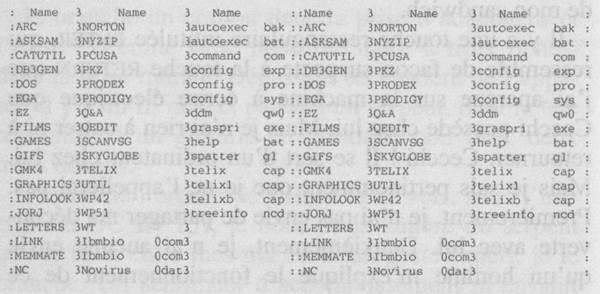

5
En me rendant aux bureaux du Village Record, je repère deux nouvelles épiceries coréennes. Je ne comprends pas comment elles peuvent prospérer, attendu qu’il doit y en avoir au moins six autres dans un rayon de dix rues. Elles mettent rarement la clef sous la porte, j’en déduis donc qu’elles savent quelque chose que j’ignore.
Leur principal atout réside dans leurs buffets mirifiques. Elles proposent des plats chauds et froids et changent tous les jours le menu. Souvent Kip et moi remplissons nos barquettes en plastique de salades de fruits et de légumes, mais il nous arrive aussi d’acheter des côtes, des pâtes ou du poulet. Le fait est que, quand vous n’avez pas envie de faire la cuisine et que vous ne savez pas quoi manger, ce genre d’endroit est idéal.
Je passe devant un Noir qui arbore un chapeau claque, le crâne rasé sur les côtés, ce qui fait qu’on a l’impression qu’il est coiffé d’une pièce montée.
Trois jeunes filles arrivent dans ma direction ; elles portent toutes un jeans déchiré au niveau des genoux. C’est censé paraître authentique, comme si elles avaient eu un accident ensemble, mais en fait ça ressemble à ce que c’est : un costume, pour lequel chacune a payé quarante ou cinquante dollars. Pourquoi ?
Les bureaux du Record se trouvent dans un nouvel immeuble beige incroyablement laid sur la 7e Avenue entre la 11e et la 12e Rues. Les cinq boutiques n’ont jamais été ouvertes en même temps. Il y a des boutiques vides un peu partout dans le Village. Décidément, quelque chose ne va pas.
Le Village Record a commencé à paraître dans les années cinquante mais a subi depuis de nombreux changements. Considéré à une époque comme une feuille de chou, il a acquis la stature d’un vrai journal, bien que légèrement à gauche.
J’appuie sur le bouton de l’ascenseur. Il arrive six ans plus tard. Personne n’en sort. Les portes demeurent ouvertes pendant quatre mois, puis se referment finalement.
Bien qu’il soit neuf, son ascension rappelle une virée en voiture à la plage un jour de fête nationale. Je suis convaincue qu’il existe des armées d’hommes et de femmes dont l’unique travail consiste à ralentir les ascenseurs dès qu’ils sont installés. Quand les portes se rouvrent au cinquième étage, je suis devenue plus âgée et plus sage.
Je pénètre dans les bureaux du Record. C’est ma première incursion dans ce lieu. Autrefois le personnel occupait deux pièces au premier étage du bâtiment, et des machines à écrire déglinguées trônaient sur de vieux bureaux en bois. L’endroit a désormais un air moderne, avec éclairage à l’halogène, chrome et métal partout. Les murs sont peints en blanc austère, et quatre fauteuils en cuir noir meublent la salle d’attente. Le cliquetis des claviers d’ordinateurs fait penser à une nuit d’été bruissante d’insectes.
Il y a de nombreux bocaux, mais on ne voit qu’une seule personne. Elle se tient derrière un comptoir qui lui arrive à la taille et n’a pas levé les yeux. Je regarde le sommet de son crâne avec ses cheveux noirs et bouclés, et suis le mouvement rapide de ses longs doigts aux ongles rouges sur les touches.
J’attends.
Je me racle la gorge.
Finalement, je dis :
— Excusez-moi.
— Bien sûr, dit-elle.
— Je vous demande pardon ?
— Vous voulez être excusée, alors je vous excuse.
— C’est un gag ?
Elle lève les yeux.
— Qu’est-ce qui est un gag ?
Je renonce à polémiquer. Elle a dans les vingt ans, les yeux maquillés en turquoise et violet de façon élaborée. Elle a des lèvres écarlates et un teint mat. Il est manifeste qu’elle fréquente un salon de bronzage.
— J’aimerais passer une annonce.
— Il faudrait aller voir le bureau de la publicité.
Je lui souris.
— Vous êtes miss...
— Erable, répond-elle, et elle hennit de rire.
Je la regarde bêtement.
— Vous n’avez rien pigé, fait-elle, déçue.
— Pigé quoi ?
— Miss Erable.
Je dois avoir le regard vide parce qu’elle répète avec agacement :
— Misérable, misérable.
Je pige.
— Ah, d’accord. Eh bien, miss Misérable Misérable, je...
— Vous ne pigez toujours pas, fait-elle, écœurée. Vous voulez quoi ?
— J’aimerais parler à quelqu’un au sujet d’une annonce à passer.
— Du genre ?
Soudain je suis gênée à l’idée que miss Erable puisse penser que je veuille débourser pour rencontrer quelqu’un. Mais que m’importe ce qu’elle peut penser ? Il paraît que passé cinquante ans on s’en moque. J’espère que c’est vrai.
Je lui montre ma licence de détective privé et elle se redresse aussitôt, lève les mains au-dessus de la tête.
— Très bien, vous m’avez eue. J’avoue tout.
Je ne trouve pas ça amusant mais je souris quand même – le modèle large qui met en valeur mes fossettes.
— J’aimerais parler à la personne responsable.
— Descendez le couloir principal et c’est la deuxième porte sur votre droite. Demandez miss Tairieuse.
— J’ai pigé, j’ai pigé, dis-je en m’éloignant.
— Vous pigez que dalle, marmonne-t-elle dans mon dos.
La deuxième porte sur la droite est ouverte, et miss Tairieuse – qui à en croire la plaque sur son bureau s’appelle Bobbie Finn – porte un chemisier en rayonne rose à manches longues avec jabot. Le bureau m’empêche de voir le reste de sa tenue. Elle a une coupe de cheveux Prince Vaillant, avec une frange inégale. La nuance châtain est étrange, comme si elle avait essayé de restituer une couleur vue dans un catalogue. Je soupçonne miss Finn d’être sa propre esthéticienne. Elle a des yeux bleus et las, et son visage est tartiné d’une poudre couleur ivoire qui évoque la pâte à crêpe. Je croyais que ma mère était la dernière à s’en mettre.
J’inspecte la petite pièce. Des posters de groupes rock tapissent les murs. Il y a deux pots de gardénias sans fleur sur le rebord de la fenêtre.
— Puis-je vous aider ? demande-t-elle.
— J’aimerais des renseignements sur les annonces confidentielles.
— Quel genre ?
Elle reprend sa cigarette en cours qui repose dans un cendrier Hard Rock Café, prend une longue bouffée et exhale un nuage de fumée.
Je résiste à l’envie de lui faire un cours sur les méfaits du tabac.
— Les rencontres. (J’ajoute aussitôt, comme la dernière des lâches :) Ce n’est pas pour moi.
— C’est pour une amie, dit-elle d’un ton las.
— Non.
— Une parente.
— Non.
Je lui montre ma licence.
— Est-ce censé éclairer ma lanterne ?
— J’aimerais savoir comment découvrir l’identité de quelqu’un qui a placé une petite annonce.
— C’est confidentiel.
— Oui, mais...
— Pas de mais. C’est notre politique.
— Un délit a été commis.
Elle hausse ses sourcils de brunette.
— Quel genre de délit ?
— Un viol.
— Oh mon Dieu. Ecoutez, je sais quel genre de bêtes hante cette ville, et toute ma sympathie va à cette fille. Mais le journal n’est pas responsable de ce qui arrive quand deux adultes se rencontrent. Je veux dire, ce n’est pas comme s’ils se soumettaient au détecteur de mensonge avant de passer une annonce. On ne peut pas surveiller toutes les rencontres qui se font. La pauvre enfant ne pourra rien nous intenter.
— Miss Finn, dis-je calmement, ma cliente n’a aucunement l’intention de poursuivre en justice le Record.
— Vous dites ça maintenant, mais attendez. Ça commence comme ça, et on en arrive vite au procès. C’est une manie dans cet Etat. Un sport national, même.
— Tout ce qui m’intéresse, c’est l’identité de l’homme qui a violé ma cliente.
— Avez-vous la moindre idée des procès absurdes qui se font de nos jours ? Une femme qui travaille ici est en train de poursuivre une autre femme en justice parce que Robert a sauté de sa fenêtre quand la seconde femme s’occupait de lui. Je vous le demande, de façon objective, est-ce que c’était la faute de cette autre personne ? Non. Mais procès il y a. Et ça dure depuis trois ans.
Je sais que je ne devrais pas m’engager dans ce genre de débat, mais je n’y peux rien :
— Mais si la seconde femme était censée le surveiller...
— Je vous en prie, dit-elle en levant la main, paume en avant. La seconde femme ne pouvait veiller sur Robert nuit et jour.
— Mais si Robert était susceptible de faire ce genre de chose, la première femme n’aurait pas dû le laisser aux bons soins de la deuxième femme.
Pourquoi est-ce que je fais ça ?
— Ah ah ! Voilà que vous trichez. Ce qui nous amène au deuxième procès, engagé par la deuxième femme.
— Il était dépressif ?
— Qui ?
— Robert ?
— Dépressif ?
— Ce que je veux dire, c’est que s’il n’était pas dépressif, comment la première femme pouvait se douter qu’il se jetterait par la fenêtre ?
— La première femme savait que la chose était possible, mais elle n’a pas averti la seconde femme. Maintenant, bien sûr, la première femme prétend que Robert n’avait jamais rien fait de tel avant et que peut-être il a sauté par la fenêtre parce que la seconde femme ne s’occupait pas assez de lui.
J’ai l’impression que cette conversation va occuper l’intégralité des années qu’il me reste à vivre.
— Il devait être dépressif. Qui irait sauter par une fenêtre pour un manque d’attention ?
— Robert.
— Est-ce que Robert est mort ?
— Bien sûr que non. Il a atterri sur ses pieds, comme n’importe quel chat.
Un chat.
— Mais il n’a plus jamais été le même. C’est la base sur laquelle la première femme s’est...
— Miss Finn, pourrions-nous parler du problème qui m’amène, s’il vous plaît ?
— Quel problème ? Ah, oui. Le procès que votre cliente veut intenter au journal.
— Non. Ma cliente n’a absolument pas l’intention de poursuivre ce journal, dis-je avec fermeté. Ma cliente a été violée par quelqu’un qui a passé une annonce dans votre rubrique « Cœurs solitaires » le 6 décembre de l’année dernière, et je veux le retrouver.
— Ce n’est pas possible. Pas par nous. Nous garantissons la confidentialité, et nous nous y tenons.
— Mais vous protégez un criminel.
— C’est inévitable. Ça vous dit quelque chose une échelle de valeur ? Une éthique ? Une morale ?
Je comprends que ma manière de procéder ne mènera à rien.
— Puis-je voir le directeur de la publication ?
— Non.
— Pourquoi ?
— Le directeur a la même échelle de valeur que moi, aussi tout le monde perdrait son temps. Et je vais vous dire quelque chose. Le genre de personne qui commet un tel acte ne va pas nous donner sa véritable adresse, et il aura payé cash. En d’autres termes, il évitera de laisser le moindre indice.
Je sais qu’elle a raison. Mais bon.
— Peut-être que si je vous le décris vous vous rappellerez quelque chose.
— Me rappeler quelque chose. (Elle soupire.) Cette personne mesure-t-elle quatre mètres cinquante ? Pèse-t-elle trois cents kilos ? A-t-elle trois yeux ? Est-elle...
— J’ai compris. (Je décide qu’il serait peut-être utile de lire l’annonce.) Est-ce que vous vendez des anciens numéros ?
— Combien en voulez-vous ?
Confortablement installée au premier étage d’Exquisites, je déguste mon café et attaque une part de pudding. Je suis sûre qu’il existe une cuisine souterraine qui, grâce à un système de tuyaux, livre le même pudding à toutes les boulangeries et tous les restaurants. Certains endroits appellent ça un quatre-quarts, mais c’est en fait exactement la même chose. Il n’y a quasiment pas un seul endroit dans cette ville que je n’ai pas testé. Bon, d’accord, je suis « cacaodépendante ». Et alors ? Il y a pire. Ma mère me vient brièvement à l’esprit, mais je referme cette porte dans un bruit mat.
J’ouvre le Record daté du 6 décembre à la page des petites annonces. Cela fait longtemps que j’ai pas lu ce journal, encore moins consulté ses annonces. Je n’hésite pas à dire, même si ça fait de moi une vieille barbe, que je suis choquée.
Les choses que les gens veulent se faire entre eux sont proprement ahurissantes. Il y en a même certaines que je n’arrive pas à visualiser. Disséminées parcimonieusement parmi cette fange se trouvent quelques annonces apparemment innocentes. Je les entoure pour les montrer à Lac.
Après avoir fini mon dessert et mon café, je traverse la 6e Avenue vers une rangée de cabines téléphoniques. J’appelle mon répondeur. Il y a trois messages.
Le premier est de mon père, qui me rappelle que nous dînons ensemble. Le deuxième est de Lac, elle veut me dire quelque chose dont elle aurait dû me parler plus tôt. Donc mon soupçon selon lequel elle faisait de la rétention d’information est correct. Il n’y a rien de tel qu’une petite confirmation pour vous redonner le sourire, même dans des affaires aussi graves. Le troisième message est d’Ursula, elle me demande de la rappeler.
Je rappelle d’abord Lac. Au bout de deux sonneries un homme répond. Je suis surprise mais demande à lui parler.
— C’est quoi ? demande l’homme.
— Comment ça, c’est quoi ?
— Vous appelez qui ?
— Miss Huron.
— Elle ne peut pas vous répondre pour l’instant. Vous voulez laisser un message ?
Je n’en suis pas très sûre. Puis il y a comme des interférences sur la ligne, et je distingue une voix de femme mais sans comprendre ce qu’elle dit. On doit poser la main sur le combiné, puis soudain j’entends Ursula qui crie quelque chose.
— Qui est-ce ? Qui est-ce ? C’est Lauren ?
— Oui.
— Oh, mon Dieu ! sanglote Ursula. Elle est morte. Lac s’est suicidée.
6
L’appartement de Lac grouille de flics, que je connais pour la plupart. Il y en a un, en particulier, que j’apprécie. Il s’appelle Peter Cecchi (prononcez Tche-ki). Nous sommes tous deux Italiens de la troisième génération, et nos pères ne sont pas de la Mafia, ne se mettent pas à table en débardeurs et slips, ont de l’éducation. Nous admettons que la Mafia existe et que des films comme Eclair de lune et Veuve mais pas trop portraiturent fidèlement certains Italo-Américains, mais il y en a plein comme nous qu’on ne voit jamais et dont on n’entend jamais parler.
Une autre raison pour laquelle j’aime bien Cecchi, c’est qu’il n’essaie jamais de me coller un meurtre sur le dos. Ce honteux stratagème est utilisé par certains écrivains, et je trouve qu’il n’a rien de crédible. Pourquoi le détective privé voudrait-il tuer tous ces gens ? Pire, pourquoi la police croirait-elle, après s’être trompée à mille et une reprises, que le détective privé est coupable ?
Cecchi fait un peu plus d’un mètre quatre-vingts et est extrêmement séduisant. Son abondante chevelure brune est parsemée de gris, et de ses beaux yeux noirs émane une certaine souffrance, comme s’il avait vu plus de choses qu’il n’est raisonnable de voir. Homme méticuleux, il arbore en permanence, sous son pardessus noir ouvert, une chemise bleu clair et une cravate gris-argent.
Nous nous saluons et je lui demande où se trouve le corps.
— Dans la salle de bains.
— Comment ?
— Elle s’est pendue.
— Vous en êtes sûr ?
— Vous voulez voir ?
Non, mais je sais que c’est nécessaire. Comme nous traversons les pièces, je remarque que Lac a tout remis en place. Pourquoi avoir rangé à ce point avant de se tuer ? Ça m’échappe, mais je sais que ça n’a rien d’inhabituel. Dans la chambre, la porte de la salle de bains bée comme une gueule avide. Je pénètre et affronte la cruelle réalité.
Une ceinture marron est entourée autour du cou de Lac. L’autre extrémité est accrochée autour d’un tuyau. Une chaise, sans doute renversée par elle, est par terre. L’horreur a remplacé la beauté, la mort la vie, et la fragilité de l’existence laisse une fois de plus sa marque monstrueuse sur moi. Je me détourne.
— Pas de message ?
Je pense au dédain affiché par Lac à l’idée qu’elle pourrait se suicider.
— Non.
— Où est la sœur ?
— On l’a renvoyée chez elle avec le frère.
— Le frère ?
Etrange. Ni Ursula ni Lac n’ont parlé d’un frère.
Cecchi feuillette quelques pages de son calepin.
— Mark Bradshaw, trente-six ans. Agent de change. Marié et divorcé deux fois. Pas d’enfants. C’est son demi-frère.
— Comment ça ?
— La mère de Lac s’est mariée deux fois. Bradshaw est son beau-fils, aucune relation consanguine avec Ursula et Lac.
Il y a eu pas mal de mariages dans cette famille.
— Quelqu’un a-t-il prévenu les parents ?
— Bradshaw va le faire dès qu’il aura réussi à calmer Ursula. Je crois que le beau-père est mort. Un des deux pères l’est, en tout cas.
Il hausse les épaules, incertain.
Nous sortons de la salle de bains.
— Quel rôle jouez-vous là-dedans, Lauren ? me demande-t-il, de retour dans la cuisine.
— Ursula m’a engagée.
— Le viol, dit-il platement.
J’acquiesce.
— Je suppose que la môme n’a pas pu le supporter.
— Quelqu’un n’a pas pu, en tout cas.
Cecchi hausse un sourcil poivre et sel.
— Je ne pense pas qu’elle se soit suicidée, dis-je.
Je lui parle de l’inquiétude d’Ursula et de ma conversation avec Lac. Et ce faisant, je me demande si le suicide redouté par Ursula n’était pas une couverture pour un meurtre, mais je garde cette réflexion pour moi.
— Et puis j’ai reçu un appel de Lac sur mon répondeur m’informant qu’elle avait quelque chose à me dire. Je me doutais qu’elle ne m’avait pas tout révélé la première fois.
— Intéressant, dit-il.
Je vois bien que Cecchi pense, comme moi, que le message laissé par Lac sur mon répondeur ne colle pas avec la logique d’un suicide. Il est clair que quelque chose cloche, mais quoi ?
— Vous avez une piste concernant ce viol ? demande Cecchi.
— J’avais à peine commencé à enquêter. Qui l’a découverte ?
Cecchi consulte une fois de plus son calepin :
— Terrence Ford. Un ami. La porte était ouverte.
J’enregistre mentalement le nom. Est-ce que Lac a appelé Ursula, comme je le lui avais conseillé ? J’aurais dû l’appeler moi-même. Plus intéressée par manger (comme d’habitude) et par Kip (également comme d’habitude), je n’avais pas contacté Ursula. Elle aussi d’ailleurs m’avait laissé un message. Après celui de Lac. Que voulait-elle ?
Cecchi et moi quittons l’appartement ensemble. La température a chuté, et je crois sentir de la neige dans l’air. J’aime la neige, mais pas en ville. Je remonte le col de ma veste et glisse mes mains dans mes poches.
— Vous allez où ? me demande-t-il.
— A mon bureau, je pense.
Cecchi émet un son incompréhensible. Je pense parfois qu’il envie mon autonomie de détective privé. Mais il a cinq enfants (deux biologiques et trois adoptés) et a besoin d’un salaire régulier.
— Ça vous va si je vous appelle demain pour l’autopsie ?
— Entendu. Comment va Kip ?
— Bien. Et Sophia ?
C’est sa femme.
Chacun demande à l’autre de transmettre son bonjour à sa moitié, et nous nous promettons de faire bientôt quelque chose ensemble tous les quatre. Peter Cecchi est un homme peu ordinaire et, en particulier, un flic peu ordinaire.
Après nous être dit au revoir, je me retrouve dans l’embarras. J’ai envie d’enquêter sur cette affaire parce que, même si la mort de Lac est vraiment un suicide, ça n’annule pas le viol. L’homme n’est peut-être pas un meurtrier, mais c’est un violeur, et il est en liberté.
Il faut que je parle à Ursula, même si ce n’est pas le meilleur moment. Et puis j’aimerais aussi rencontrer son demi-frère. Je devrais les prévenir par téléphone de ma venue mais, si je le fais, il y a peu de chance pour qu’ils me disent de venir. Ayant horreur de passer à l’improviste, je décide de me faire violence.
Un homme ouvre la porte de chez Ursula. Il est grand et bien bâti, ses cheveux auburn sont frisés. Son visage est indistinct, comme si quelqu’un avait essayé d’effacer ses traits, et son costume gris de marque en dit plus long sur sa personne que ses yeux marron terne.
— Mr. Bradshaw ?
Il a l’air surpris.
— Oui.
— J’aimerais parler avec miss... (Pendant un moment je ne me souviens plus du nom de famille d’Ursula, puis je me rappelle qu’elle et Lac ont le même père.)... Huron.
— Qui êtes-vous ?
Je décline mon identité.
— J’ai bien peur qu’elle ne puisse voir personne en ce moment.
— Je pense qu’elle voudra me voir.
Je n’en suis pas du tout sûre, mais c’est une réplique qui a fait ses preuves.
— Oh ?
Pourquoi disent-ils toujours « Oh ? » comme ça ?
— Je vous en prie, dites-lui que je suis là.
Il me dévisage, comme si mon apparence allait l’aider à se décider. C’est le cas.
— Entrez.
Une fois dans l’appartement il me conduit jusqu’au salon où j’ai interrogé Lac un peu plus tôt dans la journée. Maintenant elle est morte. Cela me fait l’effet d’un ciel couvert et sinistre.
— Comment connaissez-vous mon nom ?
— Par le lieutenant de police Cecchi. Vous êtes le frère de Lac, n’est-ce pas ?
— Son demi-frère. De quoi voulez-vous parler à Ursula ?
J’ignore sa question et m’assois dans un fauteuil à oreillettes, bien que Bradshaw ne m’ait pas invitée à le faire.
— Lac ne m’a pas dit qu’elle avait un demi-frère.
— Je n’avais pas compris que vous la connaissiez à ce point, dit-il.
Un sourire dédaigneux flotte brièvement sur ses lèvres.
— J’ai fait sa connaissance ce matin.
Je veux qu’il voie que je suis honnête.
— Ah, dit-il.
Ah. Je hais ah presque autant que oh. Je le laisse aller jusqu’au bout de sa pensée. Finalement il dit :
— Alors il n’y a rien d’étonnant à ce qu’elle ne vous en ait rien dit.
— En effet. Pourriez-vous dire à Ursula que je suis là, je vous prie ?
Il s’éloigne. J’ai envie de fouiller dans un tiroir, d’ouvrir un placard, mais il n’y en a pas dans cette pièce. Je ne sais pas ce que je cherche, bien que ça ne m’ait encore jamais arrêté.
Mark Bradshaw revient.
— Elle ne va pas tarder.
— Merci. Etiez-vous proche de Lac ?
— Proche ? répète-t-il, comme si c’était un nouveau mot.
— Etiez-vous amis ?
— Je ne vivais pas à la maison quand mon père a épousé Helena.
— Quand vous avez grandi, pourquoi n’êtes-vous pas allé habiter avec votre mère à vous ?
— Je ne pense pas que ça vous regarde, dit-il sèchement.
C’est possible, mais à présent je suis certaine de vouloir connaître la réponse à ma question.
— Il n’était pas courant à l’époque qu’un père obtienne la garde de ses enfants.
Je le regarde. Il se mordille l’intérieur de la joue en silence.
— Lauren.
Ursula est entrée. Ses yeux sont gonflés comme de la pâte feuilletée.
— Je suis désolée, dis-je.
Elle s’assoit sur le canapé et s’enfonce dans les coussins. Sa main tremble comme elle prend un vieil étui à cigarettes en argent sur la table basse. Bradshaw a déjà sorti son briquet.
— Je vous ai téléphonée, me reproche-t-elle.
— Je sais.
— Pourquoi ne m’avez-vous pas rappelée après avoir vu Lac ?
— Lac vous a donc téléphoné pour vous dire que je l’avais vue ?
— Non. Je l’ai supposé. Vous aviez dit que vous le feriez.
Comme si ce qu’une personne promet était un fait accompli.
— Vous l’avez bien vue, n’est-ce pas ?
— Oui, dis-je. Son appartement avait été mis à sac. Quelqu’un cherchait quelque chose.
— Je n’ai pas remarqué de désordre particulier, dit-elle, les yeux fixés au plafond comme si la vision de l’appartement de Lac, telle qu’elle l’a vu récemment, allait surgir entre les moulures.
— Elle a manifestement tout rangé.
— Qu’est-ce qu’on a volé ?
— D’après Lac, seules les lettres du violeur avaient disparu.
Soudain Ursula gémit, se prend la tête à deux mains comme si on venait de la frapper par-derrière, et sanglote.
J’attends.
Bradshaw se lève d’un bond, s’approche d’Ursula puis recule, incapable de la réconforter, ne sachant que faire. Il se retourne et me fusille du regard, comme si le chagrin d’Ursula était ma faute. Mais avant qu’il ne puisse exprimer sa pensée, Ursula reprend :
— Je le savais. Je savais qu’elle était désespérée. Je vous l’ai dit.
— Lac trouvait l’idée du suicide ridicule.
— Comment ça ?
Bradshaw s’assoit sur le canapé, les jambes repliées derrière la table basse.
Je leur rapporte ma conversation avec Lac concernant les craintes d’Ursula.
— Et vous l’avez crue ? me demande Bradshaw.
— Oui. Il n’y avait rien dans son attitude qui m’ait laissée penser qu’elle s’en prendrait à elle-même. Elle était en colère contre son violeur. Et il y a autre chose. Quelque chose d’important.
Ursula et Mark se figent et paraissent retenir leur souffle.
Je ne dis rien, attendant de voir lequel des deux va parler.
C’est Bradshaw.
— De quoi s’agit-il ?
— Elle a laissé un message sur mon répondeur.
— Et ? demande encore Bradshaw, impatient.
Il marche à fond dans mon stratagème.
— Je ne sais pas, dis-je pour les provoquer.
Je remarque qu’ils n’échangent aucun regard, ce qui paraît artificiel.
— C’était quoi ce message ? demande Bradshaw.
Je ne peux me taire plus longtemps :
— Elle disait qu’elle avait des choses à me révéler.
— Mais elle n’a pas dit quoi ? demande Ursula.
Je n’arrive pas à savoir s’il y a de l’espoir dans sa voix, ou juste de la curiosité.
— Non. Toutefois, si elle avait l’intention de se suicider, pourquoi m’aurait-elle laissé ce message ?
Ils se regardent à présent, puis, n’ayant apparemment rien appris, en reviennent à moi.
— Je pense que Lac a peut-être été assassinée.
— Assassinée ? répète Ursula.
— Par qui ? demande Bradshaw.
Je hausse les épaules.
— Le violeur ? demande-t-elle.
Nouveau haussement d’épaules de ma part.
— Que voulez-vous exactement, miss Laurano ? me demande alors Bradshaw.
— Oui, j’aimerais également le savoir, renchérit Ursula.
Je me retrouve dans une drôle de position. Je suis censée travailler pour Ursula, ou du moins je l’étais, et cependant je me comporte en adversaire. Je me lève et déclare :
— Je suppose que vous ne souhaitez plus que j’enquête.
— Que vous enquêtiez sur quoi ? fait-elle naïvement.
— Le viol, sinon le meurtre.
— Elle n’a pas été assassinée, déclare Ursula avec autorité. Et je ne pense pas qu’il y ait matière à... à continuer, étant donné les circonstances.
Elle a baissé les paupières en prononçant ces derniers mots, comme s’ils étaient honteux, souillés.
Je mets de côté l’hypothèse de l’assassinat.
— Mais le violeur court toujours, dis-je.
— Combien nous devons-vous ? demande Bradshaw.
— Nous ?
Il désigne Ursula d’un geste maladroit.
— Je ne suis pas certaine de comprendre votre lien avec Ursula, dis-je.
— Je ne pense pas que ce soit nécessaire, répond-il avec mordant.
— Nous sommes amis, intervient Ursula.
— Bon, à combien s’élève votre note ?
Je l’ignore. Ursula a-t-elle tué Lac ? Ou est-ce Bradshaw ? Ou sont-ils tous les deux dans le coup ? Pourquoi veulent-ils se débarrasser de moi ?
— Une autre femme risque de se faire violer si l’on ne coince pas ce type.
Elle balaie ma remarque :
— Je veux vous payer pour le temps que vous avez consacré. Quels sont vos tarifs ? Nous n’avons jamais...
— Trois cents dollars plus les frais, mais laissez tomber, dis-je, furieuse.
Je ne veux pas de son argent. Je lui en veux pour son attitude égoïste, et je ne l’aime pas, lui non plus. Tout ce que je veux, c’est sortir de là. Je suppose que c’est stupide – on appelle ça se tromper de cible, je crois – mais je ne peux pas prendre son argent.
Je quitte en claquant la porte cet appartement qui sent le pot-pourri, sors de l’immeuble et dévale les marches du perron. Même crasseuse, la rue sent moins mauvais que là-haut.
7
Les restaurants ont la vie brève à New York, comme les politiciens. Celui que nous choisissons sur Bleecker Street, Arlecchino, n’a pas d’avenir ; il est trop bon. Je suis distraite et n’arrive pas à oublier cette enquête. Il reste trop de questions sans réponse.
Nous en arrivons finalement au dessert, et Kip, ma mère, Katherine, et moi prenons du sabayon. Je dis « finalement » parce que je suis toujours pressée d’en arriver au dessert. Mon père, Silvio, qui n’est pas porté sur le sucré, prend un espresso.
Tout le monde trouve que je lui ressemble, et je suppose que c’est vrai. Je n’ai ni les cheveux bruns, ni la mèche qui me tombe sur le front, mais nos yeux sont les mêmes, nos nez également aquilins. Ma bouche ressemble plutôt à celle de ma mère, ce qui est heureux parce que mon père a des lèvres fines.
Ils ont passé la soixantaine, sont en bonne santé – si l’on excepte la... maladie de ma mère. Mon père est toujours avocat. Et Dieu seul sait ce que ma mère fait en ce moment.
Elle a consacré sa vie à être une épouse et une mère, bien qu’elle ait eu des rêves et des aspirations propres. Je le sais parce qu’elle m’en a parlé assez souvent, me racontant comment elle avait renoncé à tout ce qu’elle aurait pu être si elle n’avait pas épousé mon père et donné naissance à ma personne. Elle aurait pu être : a) écrivain ; b) actrice ; c) historienne. Il y a aussi un d), un e) et un f), parfois même un g), mais ça change d’une conversation à l’autre selon la dose d’alcool qu’elle a ingurgitée.
J’ai mis du temps à admettre que ma mère était une alcoolique, même si je prononce ce mot presque avec allégresse. Ma mère ne correspondait pas à l’image que je me faisais d’une alcoolique.
Je ne l’ai jamais vue perdre connaissance, je ne suis jamais rentrée à la maison pour la trouver vautrée sur le carrelage de la cuisine, comme ça arrive à certains gosses. Elle ne m’a jamais maltraitée. Néanmoins, comme toute maladie qu’on ne soigne pas, ça n’a fait qu’empirer. Il y a les répétitions, les récits longs et fastidieux, la voix qui déraille légèrement, les yeux vides. Et c’est alors que je me pose la question : a-t-elle jamais été là ? Je n’aime pas y penser, et il s’en suit de ma part un certain aveuglement. C’est un cercle infernal.
En même temps, elle mène une existence équilibrée, continuant à bien s’habiller, à rester propre et soignée. Elle a pour seul soutien mon père, aussi on peut dire qu’elle s’en sort. Mais il n’en demeure pas moins une impression de faille profonde qu’elle dissimule sous d’irritantes petites diversions.
Mon père se fait complice. D’une certaine façon, pour une raison ou une autre, tout cela lui convient. Mais cela fait vingt ans environ que c’est leur problème, et j’essaie de prendre mes distances quand je peux.
Ils ne sont pas dénués de charme ni de grâce, d’esprit ni d’intelligence, et voilà pourquoi c’est si difficile.
Dire qu’ils sont épouvantés par mon métier serait trop faible. Je suis une fille unique surgâtée, et la conception qu’a mon père de la vie consiste à voir la mort et le viol dissimulés derrière chaque arbre. Quand Warren s’est fait assassiner et qu’on m’a violée et tabassée, il a eu l’impression d’avoir raison. Nous nous efforçons de ne pas aborder le sujet, mais il revient toujours, en général de la façon qui suit :
— Sur quelle horrible enquête travailles-tu ?
— Incendie criminel et meurtres en série.
Il se bouche les oreilles à deux mains.
— Je ne veux rien entendre, Lauren. Ça me rend malade.
Je jette un œil à Kip et à ma mère, qui toutes deux me font non de la tête, me signifiant l’inutilité de lui rappeler qu’il a lui-même posé la question. Je me contente de sourire ingénument.
— Tu n’as jamais pensé à devenir magicienne ? me demande-t-il.
C’est sa blague préférée. Enfin, presque une blague. Ce qu’il veut dire, c’est : ai-je jamais pensé à devenir autre chose que détective privé ? Même s’il connaît la réponse, je joue mon rôle et lui dis non, mais lui promets d’étudier la question sérieusement. Ça l’apaise un moment.
Kip, qui n’est pas aveugle au point d’ignorer les défauts de mes parents, les adore. Et la réciproque est vraie. Il n’y a aucun malentendu sur notre union. Ils la considèrent comme leur belle-fille. J’ai conscience que c’est là une attitude inhabituelle, qui rend mes relations avec eux beaucoup plus faciles que ne le sont celles de la plupart de mes amis avec leurs parents.
Nous parlons des films que nous avons vus, des livres que nous avons lus. Mes parents sont de grands lecteurs. Je suppose que c’est pour ça que j’ai toujours un livre dans mon sac ou dans ma poche. Je leur suis reconnaissante de cet héritage.
Le repas est fini et on nous apporte l’addition. Nous ne nous battons pas pour la régler parce que nous savons que mon père tient à le faire. Comme d’habitude, il laisse un trop gros pourboire. Et comme d’habitude, ma mère et lui se disputent à ce propos. Il l’emporte. Surprise.
Sur le parking, nous attendons qu’on leur amène leur voiture.
— Revoyons-nous bientôt, dit ma mère.
Elle ne vit jamais le moment présent, elle anticipe toujours le prochain dîner, le prochain événement.
— Pense à te reconvertir dans la charpente, Lauren, me dit mon père.
Il croit faire de l’humour, n’ayant aucune idée du nombre de femmes qui exercent aujourd’hui ce métier.
— Je pourrais me couper un doigt par accident.
— Tu as raison, dit-il en clignant de l’œil. Laisse tomber.
La voiture arrive dans un crissement de pneus. Le groom, dont le visage fait penser à un journal froissé, sort et pose un regard perçant sur mon père.
Mon père lui donne inutilement un pourboire. Nous nous regardons toutes les trois : nous savons, nous comprenons, nous compatissons.
— J’espère que vous allez nous laisser vous raccompagner, les filles, dit mon père comme à chaque fois.
Les filles. Nous n’avons jamais pu l’empêcher de nous appeler ainsi.
Que nous puissions marcher dans les rues de New York sans eux les autres soirs importe peu. Nous refusons poliment son offre, puis les embrassons. Ils vont retourner dans le New Jersey, rejoindre la ville et la maison où j’ai grandi. Je remercie Dieu de ne pas rentrer avec eux.
Quand ils sont partis, Kip glisse son bras sous le mien et nous rentrons chez nous.
— Elle tient bien le coup, dit-elle.
— Trois manhattans. Je serais le cul par terre.
— Un seul me suffirait.
— Tu crois qu’elle arrêtera un jour ?
Mais je sais très bien que Kip ne peut pas répondre à cette question.
— Sans doute pas tant que ton père la protégera.
— Oui, dis-je tristement, et je serre plus fort son bras contre moi.
Nous n’avons pas eu l’occasion de discuter avant de retrouver mes parents, aussi je parle à Kip de mon enquête, mais je recours aux vrais noms.
— Tu ne crois pas à la thèse du suicide, hein ? fait-elle.
— Je ne pense pas qu’on passe un coup de fil pour dire qu’on a des révélations à faire si on a l’intention de casser sa pipe dix minutes plus tard.
— Tu as sûrement raison. Des suspects ?
— Deux pour l’instant.
Je lui parle de la demi-sœur de Lac et de son demi-frère.
— Tu crois qu’ils sont amants ?
— C’est possible.
— Quel mobile ? demande-t-elle, en parfaite compagne de détective.
— Je l’ignore encore.
A l’angle de la 3e Rue et de la 6e Avenue nous changeons de trottoir. Le Waverly Theater, qui est tombé sous la coupe de l’odieux Odeon Cineplex, passe les mêmes films depuis trois mois. Ces deux salles ont été réunies à partir de ce qui était autrefois le balcon et l’orchestre d’un cinéma de quartier unique et pas cher. La place est désormais à 7 dollars 50, ce qui fait 15 dollars à deux. Tout ça pour s’asseoir dans des sièges étroits, le nez collé à l’écran. Elle est loin l’époque où la séance était à un dollar et où le pop-corn coûtait cinquante cents. Les films sont de pire en pire, et le pop-corn a un goût rance.
Nous passons devant la Triade Sucrée. C’est ainsi que j’appelle la zone située entre le cinéma et la 4e Rue Ouest. Je l’ai baptisée ainsi parce qu’à la suite se trouvent le glacier Ben & Jerry, une confiserie, et Aux Bons Cookies de Mrs. Field. Au moins David’s Cookies a disparu. Il m’arrivait parfois de faire un immense détour pour éviter ce coin.
En passant devant, Kip pose une main protectrice sur le côté de mon visage, comme une œillère pour cheval.
— Tu es si bonne, dis-je en tendant le nez pour essayer de capter les odeurs sucrées qui émanent des boutiques.
— Tu ne mangerais quand même pas un cookie après un tel repas et ce dessert, non ?
Je ne réponds pas.
— Tu en serais capable, conclut-elle.
Je m’engage dans la 5e Avenue.
Le Village est calme pour un vendredi soir. Les hordes habituelles de gamins venus d’autres quartiers et du New Jersey sont absentes. Mais nous avons tout de même droit au spectacle d’un homme bien habillé en train de pisser contre un mur. Je suis toujours étonnée de voir que beaucoup d’hommes continuent de considérer New York comme leur urinoir personnel.
Les sans-abri tendent leur gobelet en plastique aux yuppies qui ne s’arrêtent même pas. Pour être honnête, je veux bien reconnaître qu’on ne peut pas satisfaire toutes les demandes.
Nous tournons dans la 4e Rue Ouest et nous dirigeons vers la 7e Avenue. Je sens la chaleur du corps de Kip contre le mien, et des idées me viennent. Des fantasmes me troublent. Je hâte le pas. Ça la surprend. D’habitude elle se plaint de mon rythme d’escargot. J’ai toujours un pas de retard sur elle, à cause de mes petites jambes.
— Pressée ? demande Kip.
Je la regarde dans les yeux en souriant.
— Oui.
Elle comprend et sourit elle aussi. Nous ne disons plus rien, mais en prenant Perry Street nous courons presque.
Une fois la porte de l’appartement refermée, nous nous prenons dans les bras, nous embrassons et nous aidons à nous déshabiller. Comme nous ne sommes pas dans un film, ça n’a rien de gracieux, mais c’est urgent et excitant.
Nous nous caressons. J’embrasse son sein et sens son mamelon durcir dans ma bouche. Elle gémit doucement et...
Le téléphone sonne.
— Ne réponds pas, murmure-t-elle.
— D’accord.
Nous nous laissons glisser par terre et continuons notre examen respectif de l’autre, comme si c’était la première fois.
Le répondeur prend en charge l’appel, et j’entends la voix de Kip dire à la personne en ligne ce qu’il faut faire après le bip. Cela semble irréel, comme s’il y avait deux Kip dans la pièce.
Elle glisse une main entre mes jambes.
La personne au bout du fil parle.
— Lauren, c’est Cecchi. J’ai le rapport sur Huron.
Je regarde Kip.
Ses yeux m’implorent.
C’est plus fort que moi.
Je rampe sur le tapis, décroche le combiné, lui dis d’attendre, puis arrête le répondeur.
— Quoi ?
— Elle a été étranglée à mains nues.
— Assassinée.
Je ne suis pas surprise.
— Exact.
— Vous l’avez dit à sa sœur ?
Je me demande si Ursula voudra que je reprenne l’enquête.
— Je vais le faire, puis je préviendrai la mère.
— Faites-moi savoir comment elle encaisse.
Il me le promet et nous raccrochons. Comme je retourne auprès de Kip, je pense à Lac, sa jeunesse, sa beauté éthérée effacée en quelques secondes. La mort est habile, rusée, elle sait nous surprendre au meilleur moment. Nous devons être vigilants. Lac ne l’a pas été.
Je regarde Kip. Les lampadaires diffusent leur lumière par les stores Levolor à demi ouverts, dessinant des rais sur son corps nu. Ses seins sont dressés, sa bouche légèrement entrouverte.
Lac est morte, mais je suis vivante.
8
La sonnerie du téléphone m’écorche les tympans. J’aimerais pouvoir le débrancher, mais c’est mon lien au monde – le garant de ma sécurité financière, en fait.
La voix d’Ursula, grave, abattue, prononce mon nom. Quelle autre voix pourrait-elle avoir, avec sa sœur morte, assassinée ?
— Il faut que je vous voie, Lauren. Je suis désolée pour ce qui s’est passé, mais les choses ont changé depuis.
— Oui, c’est certain.
— Il y a quelque chose... peut-être devrais-je en parler à la police, mais je ne sais pas, je me dis... pourriez-vous passer cette après-midi ?
Nous fixons une heure. Je me souviens du dernier message de Lac, et me demande si ce qu’Ursula a à me dire a un rapport avec ce que je n’ai jamais pu apprendre de sa sœur.
Je termine mon café, balance le verre dans la corbeille. Raté. Je consulte ma montre. Il me reste quelques heures avant le rendez-vous. Ursula va-t-elle à nouveau m’engager ? Si oui, il y a des choses que je dois tirer au clair. Mais si ce n’est pas le cas, et que je prends sur mon temps à moi ?
Le temps continue à se comporter bizarrement, comme si on était à San Francisco. Les exclus jonchent les rues : poivrots, drogués, déments. Ils demandent de l’argent, se parlent à eux-mêmes, pestent contre la société. Je m’aperçois que je suis d’accord avec certaines de leurs diatribes et me demande ce que ça signifie.
Sur la 6e Avenue, entre la 4e Rue et la 8e, des vendeurs refilent leur camelote illégale. Chaque jour ils apportent leur butin dans des caddies, des camionnettes, des voitures, et l’étalent sur le trottoir. Certains vendent des bijoux, de l’encens, des lunettes de soleil, mais la majorité colportent des vieux livres et des vieilles revues. Je me demande souvent qui achète des exemplaires datés d’un an de The New Republic ou du Times.
Il y a un type qui vend des livres « presque neufs », des nouveautés, et cela juste devant la librairie B. Dalton. J’admire son culot. Il dit que ses livres n’ont été lus qu’une seule fois. Je lui ai fait remarquer que ça n’empêchait pas qu’ils étaient quand même en piteux état, mais il persiste dans sa délicate distinction. De temps à autre je déniche un bouquin à un prix intéressant, même si je me sens coupable de ne pas l’acheter à la librairie Three Lives. Aujourd’hui neuf livres sont étalés sur une couverture beige.
— Salut, Richard, dis-je.
Il me salue d’un mouvement de tête. Richard n’est pas très grand, avec des cheveux noirs indisciplinés et des yeux gris. Ses gros doigts s’attardent dans sa moustache flottante. Il porte une veste de l’armée, un pantalon en treillis et une casquette de cycliste bleue, rayée au milieu, avec une minuscule visière qui rebique.
J’examine son butin. Le dernier Penelope Lively est à dix dollars. Je le prends, le retourne, feuillette au hasard, comme si ça pouvait éclairer ma lanterne.
— Dix dollars pour ça, c’est cher !
— Ne l’achetez pas, répond-il en haussant les épaules. Vous voulez casquer le prix fort, allez chez Dalton, ça m’est égal. Ce livre sera parti avant ce soir. Non, je dis n’importe quoi. Je parie cent dollars qu’il sera parti dans une heure.
Richard essaie tout le temps d’engager des paris avec moi. C’est tentant, mais je résiste et repose le livre sur la couverture.
Il regarde à droite et à gauche comme s’il guettait l’ennemi, se penche vers moi et murmure :
— Neuf dollars.
— Huit, dis-je.
— Vous voulez ma mort. Je l’ai payé huit.
— Si c’est le cas, Richard, vous vous êtes fait voler.
— Je sais qu’on m’a volé. Je me fais voler tous les jours de cette putain de vie. Vous voulez savoir pourquoi ? Parce que je suis trop bon. Vous pigez ? Trop bon. C’est tout moi. Eh merde, j’vous le laisse pour huit dollars cinquante, ce qui me paiera même pas une tasse de café.
— Vous êtes bon, Richard. Je le prends.
Kip adore Lively.
Il hoche la tête, comme pour bien montrer que oui, il est bon, qu’il se fait voler.
Je lui tends l’argent, et Richard le regarde avec dégoût.
— Vous avez pas idée de mes frais généraux, dit-il sérieusement.
— Vous êtes trop bon, Richard.
— Oui, vous pouvez le dire. Putain, j’suis trop bon.
On se dit au revoir, je coince le livre sous mon bras et me dirige vers la bouche de métro.
My Pierre est sur la 78e, près de Broadway, comme me l’avait dit Lac. Le décor est soigné. Simple, lignes épurées, murs blancs, nappes couleur pêche.
A cette heure-ci, l’endroit est désert. Les serveurs terminent de dresser les tables. Le cling d’un verre en cristal, le cliquetis des couverts en argent sont tout ce qu’on entend dans la salle. Des serveurs en smoking noirs et ceintures roses sont sur le pied de guerre. Un grand type, en costume noir, que je suppose être le maître d’hôtel, s’approche de moi. Il a un crâne chauve et tavelé et une complexion rougeaude. Je le soupçonne de boire un petit verre de temps à autre.
— Puis-je vous aider, madame ? demande-t-il, avec un regard discret et exercé à mon anneau. Nous ne sommes pas encore tout à fait prêts pour le déjeuner[2].
Impossible de dire si son accent est authentique.
— Je ne suis pas venue pour déjeuner, dis-je, en m’efforçant de ne pas paraître insultante.
Ça ne marche pas.
— Pourquoi ?[3] demande-t-il d’un ton maussade, sa lèvre inférieure boudeuse comme celle d’un enfant.
Mes connaissances en français s’arrêtent là.
— Parce que je cherche quelqu’un.
Je lui montre ma licence.
Il me prend mon portefeuille des mains, examine attentivement le document, le touche comme s’il était écrit en braille.
— Vous n’êtes pas de la police, alors ?
— Je suis détective privé.
— Ahhh !
C’est légèrement plus irritant que le simple ah.
— Vous cherchez quelqu’un qui travaille ici ?
— Un client.
— Lequel ?
Je sors de mon sac la photo de Lac. Il la prend et me rend mon portefeuille, hoche la tête plusieurs fois de suite, puis soupire.
— Magnifique.
— Vous la reconnaissez ?
— Non.
Il tient la photo entre deux doigts, comme si elle était obscène.
— Vous en êtes sûr ?
— Oui[4].
J’avais oublié ce mot.
— Peut-être l’un des serveurs se souviendra d’elle.
Il consulte sa montre, frappe deux fois dans ses mains, et ses aides nous rejoignent. La photo passe de main en main, suscitant de nombreux commentaires polis, mais aucun souvenir particulier. Je leur décris l’homme qui l’accompagnait.
Un serveur au visage émacié et aux yeux marron s’avance. Je me demande s’il a le SIDA.
— Je me rappelle, dit-il. Il a laissé un pourboire ridicule.
C’est donc l’argent, et non la beauté, qui suscite le souvenir. Mais est-ce bien nouveau ?
— Maintenant je me souviens de la fille, reprend-il. Elle avait l’air nerveuse, elle a laissé tomber sa fourchette.
— Comment a-t-il payé ? Liquide ou carte de crédit.
— Nous n’acceptons pas les cartes de crédit, précise le maître d’hôtel en tordant le nez, comme si l’idée était absurde.
— En liquide, donc, dis-je à personne en particulier. Y avait-il quoi que ce soit d’anormal chez cette personne ?
— La bague, dit le serveur émacié. Ce n’est pas que c’était bizarre. Mais je l’ai remarquée parce que mon neveu a la même.
Mon cœur de détective fait un bond.
— Vous pouvez me la décrire ?
— En argent, avec des aigles enserrant une pierre rouge. Il y a la date sur un côté et sur l’autre le nom d’une université.
— Laquelle ?
— Easton.
Il s’agit de l’école privée pour fils de riches dans l’Upper East Side.
— Et la date ?
— J’ai pas pu la voir. Mon neveu est de la branche aisée de la famille, ajoute-t-il amèrement.
Une fois de plus, je m’étonne de la rapidité avec laquelle les gens se dévoilent.
— Mon père, commence le serveur, incapable désormais de s’arrêter, s’est fait gruger. Mon oncle l’a mis sur la paille. C’est une vieille histoire. Mon père aurait dû avoir sa part.
Je hoche la tête d’un air compatissant.
— Quelqu’un se rappelle-t-il un autre détail ?
Personne. Je les remercie et m’en vais.
Je regarde ma montre. Ça recommence. Je trouve une cabine et appelle Susan.
Elle décroche et dit :
— Tu vas être en retard.
— Tu n’as pas d’autres amies ?
— Aucune qui me soit aussi chère que toi, tête de linotte.
— J’appelle depuis une cabine, alors ne raccroche pas, hein ?
— La suite.
— Je ne pourrai pas venir.
— Vraiment ?
— Je suis au diable Vauvert, dis-je piteusement.
— Oh, dans ce cas, bien sûr, je comprends. Comment pourrais-tu venir ici si tu es là-bas.
— Il y a quelqu’un que je dois voir.
— Au diable Vauvert.
— Dans ton quartier.
— J’espère que c’est important, Lauren. De qui s’agit-il ?
— Je ne peux pas te le dire.
Elle raccroche. Je ris. Plus tard je passerai la voir avec une boîte d’Almond Joy (elle adore) et implorerai son pardon.
Au moins j’ai une nouvelle piste. L’école Easton.
Mais il faut que je voie Ursula d’abord, que je découvre ce qu’elle veut et, dans la mesure de mes moyens, que j’essaie de déterminer si elle est coupable de meurtre.
9
En me rendant chez Ursula, je passe devant un type d’âge moyen enveloppé dans une couverture souillée, qui boit une bière à la paille.
— J’ai sérieusement envisagé de me présenter au poste de maire.
Il ne s’adresse à personne en particulier mais sa voix est sincère. Je ne peux pas m’empêcher de rire. Il m’entend et se tourne vers moi. Ses yeux sombres et déments sondent mon regard.
— Mais j’ai décidé que je n’avais besoin que d’une maison et d’une femme, dit-il d’un air de défi.
Je le dépasse prudemment et l’entends me dire :
— Est-ce trop demander ?
En fait, non, mais je doute fort que cet homme ait un jour une maison à lui. Quant à une femme, eh bien, qui sait ?
Ursula m’ouvre au premier coup de sonnette. Aujourd’hui elle porte une jupe en daim marron et un pull vert. Même légèrement maquillée elle conserve un visage pâle. Elle me précède dans le salon qui embaume la lavande et je m’assois sur le canapé à fleurs. Elle me propose du thé. Je décline.
— Que puis-je faire pour vous ? dis-je d’un ton professionnel.
— Vous êtes en colère.
— Non. Pourquoi dites-vous ça ?
Elle secoue la tête, commence à pleurer.
Je refoule une envie de la réconforter et attends que ça passe. Je sais d’expérience que j’en apprendrai plus d’elle ainsi. Un boulot de sans-cœur. Ma ruse infâme porte ses fruits très vite.
— Je suis navrée, dit Ursula en sortant un mouchoir de la poche de sa jupe et en s’en tamponnant les yeux. Je pensais que vous ne voudriez plus entendre parler de moi après que je vous ai retiré cette enquête.
— C’est déjà arrivé, vous savez, dis-je avec insouciance, imperméable à l’insulte. (Enfin, j’espère.) Que vouliez-vous me dire ?
Elle me fixe un moment, confrontant son désir d’absolution et mon évidente indifférence à son attitude passée. Un changement dans son regard m’indique qu’elle va renoncer au pardon et en venir au fait.
— Je veux que vous sachiez que la chose m’était totalement sortie de l’esprit jusqu’à ce matin, sinon j’aurais... Je pense que je l’aurais mentionnée, surtout quand Lac était... était encore...
Vivante. Je sais, c’est le terme qu’il faudrait. Sept lettres, mais si difficiles à dire à présent.
— J’ai complètement oublié que je l’avais. Elle me l’a donné avant de me parler du viol.
— Donné quoi ?
— Je l’ai trouvé ce matin alors que je cherchais tout autre chose dans mon placard. Lac l’a mis là à dessein, au fond.
J’ai envie de répéter ma question, mais j’essaie de contenir mon impatience. Je me mets à compter les fleurs du canapé.
Ursula va dans son bureau. Elle revient avec un grand sac en toile qu’elle pose délicatement sur la table.
— Peut-être que ce n’est rien. Enfin, ça ne veut peut-être rien dire. Mais j’ai pensé, vu la façon bizarre qu’elle a eu de...
Elle ouvre une poche extérieure à fermeture Éclair et en sort un petit objet de forme rectangulaire. C’est foncé et étrange. J’ignore de quoi il s’agit. Ursula le pose, puis ouvre le rabat qu’elle soulève. Depuis le canapé, je ne peux pas voir ce qu’il y a dedans, aussi je me lève et me penche par-dessus la table.
Je distingue un objet gris presque carré. Il doit faire quarante sur quarante-cinq centimètres, et dix d’épaisseur. Sur le dessus, à gauche, il y a l’inscription TOSHIBA. Je ne mets pas longtemps à en tirer les conclusions qui s’imposent : mon cœur et mon pouls réagissent comme des chiens paniqués, me dévorant les entrailles.
C’est un ordinateur !
Un portable.
J’ai fermement et fièrement refusé d’entrer dans l’ère technologique dans laquelle nous vivons. Kip me traite de sotte, ou quelque chose dans ce genre, et me dit que je me simplifierais ma vie professionnelle si j’avais un PC et quelques programmes pour conserver une trace de mes factures et de mes clients, comme elle le fait. J’ai résisté à la calculette et continue de recourir à une machine à écrire mécanique. Je me sers toujours d’un stylo à encre – le genre marbré des années quarante. Ringarde ? Peut-être. Non, c’est plutôt de l’ordre de l’inadaptation. J’ai peur, si je me mettais à l’informatique... d’échouer. Or Dieu et mes parents savent que c’est exclu. Echouer ne fait pas partie de mon vocabulaire.
— C’est un ordinateur, dit Ursula.
— Oui.
Je frissonne légèrement.
— Vous avez froid ? Vous voulez que je mette le chauffage ?
Je n’ai rien d’une frileuse et je le maintiens.
— Qu’est-ce ça a à voir avec... avec tout ça ?
— Je n’en sais trop rien, dit Ursula en sortant l’objet du sac.
Elle le pose sur la table et appuie sur quelque chose qui déclenche l’ouverture de la Bête.
L’écran éteint, tel un œil aveugle, me fait face. Son petit clavier, avec ses drôles de touches F en haut, me met au supplice. Et que signifient ces flèches ? Que veulent dire CTRL, ALT, INS, DEL et ESC ? Et à quoi rime ce VERR. NUM. ? Je déteste tout ça !
— Elle en parlait si bizarrement en me l’apportant. C’était comme si... Je ne sais pas comment expliquer ça sans que vous me preniez pour une folle... mais c’était comme si la chose était vivante pour elle, et qu’elle ne pouvait plus vivre avec.
Rien de tout cela ne me paraît étrange. Mais c’est plus fort que moi, mon esprit se met à carburer.
— Qu’a-t-elle dit ?
— Simplement qu’elle ne pouvait plus le garder chez elle et voulait le laisser ici. Je lui ai demandé pourquoi mais elle n’a pas répondu.
Mon sang de détective frémit.
— Vous savez pour quoi elle s’en servait ?
— Je suppose que c’était pour l’école, le courrier.
— Je ne me rappelle pas avoir vu d’imprimante chez elle.
Je suis absurdement fière de savoir qu’une imprimante va avec un ordinateur, et je dois réprimer un sourire arrogant.
— Voici l’imprimante, dit-elle en me montrant le petit bidule rectangulaire.
Je suis déçue, puis étonnée.
— C’est une imprimante, ça ?
Je la regarde et vois qu’il y a marqué KODAK DICONDC 150 PLUS. Il y a différents libellés et boutons sur le couvercle, et une fente par laquelle, je suppose, entre et sort le papier. Lac a dit, je m’en souviens, que les lettres envoyées par son agresseur avaient sans doute été imprimées. Je me souviens, également, qu’elle a dit ça d’une drôle de façon. Je n’arrive pas à établir un lien.
— Quel rapport pensez-vous que ça ait avec son assassinat ?
Ursula tressaille en entendant ce mot, qui demeure encore tout nouveau dans sa vie.
— Je vous le répète, je ne sais pas. Le fait est que je n’y connais strictement rien en ordinateur. En fait, ils me terrifient.
— Vraiment ? dis-je sans la moindre honte. Pourquoi ?
J’attends qu’elle éclaire ma lanterne.
— Ça a peut-être un rapport avec les maths... Je n’ai jamais été très bonne dans ce domaine.
Je hoche la tête, supérieure mais compréhensive. Je ne vois pas la nécessité de lui dire que j’ai été recalée trois fois en géométrie. Je me demande si c’est mon trop bref passage en section mathématiques qui explique que les ordinateurs me demeurent abscons.
— J’aimerais bien ne pas avoir cette attitude. Après tout, je suis une femme sensée, et c’est comme avoir peur des souris ou je ne sais quoi. Quel cliché !
Là, nos chemins divergent. Les souris ne me gênent pas. C’est Kip qui grimpe sur les tables en hurlant quand elle en voit une.
— Les souris ne me gênent pas, dis-je d’un ton que je suppose un peu macho, en me répugnant légèrement.
— Je sais qu’il a un disque dur, alors il devrait peut-être y avoir dedans des choses.
Un disque dur. Il a un disque dur. Est-ce que ça veut dire existe-t-il des disques mous ? Visiblement, Ursula en sait plus que moi, mais je ne veux pas faire étalage de mon désarroi. J’acquiesce. Steve Jobs en personne.
— Je suppose que vous voulez que je travaille pour vous à nouveau ?
— Oh, oui. Je suis désolée. J’aurais dû vous le demander. Vous êtes d’accord ?
— Bien sûr. Y a-t-il autre chose qui concerne cet ordinateur ?
Je prie pour que survienne une espèce d’illumination.
— Laissez-moi réfléchir.
C’est ce que je fais. Je lorgne la Brute et essaie de me convaincre que je peux aisément casser ce machin, mais Ursula met un terme à ma rêverie en prononçant des paroles si énigmatiques que je suis obligée de lui demander de répéter.
— Lac a dit qu’il y avait un moped qui allait avec.
Un moped ? Même moi je sais que ça ne va pas. Un moped est un terme un peu ringard pour désigner une mobylette. Mais peut-être qu’il existe une partie de l’ordinateur qui s’appelle ainsi.
— Peut-être que le moped est quelque part là-dedans, dit Ursula en retournant la sacoche dans tous les sens, en en fouillant tous les recoins.
Elle sort différents cordons qui se terminent bizarrement, un truc noir et oblong marqué AC ADAPTOR dessus, plusieurs prises, mais pas de moped. Je ne suis pas surprise.
J’ai envie de lui demander à quoi sert le moped. Est-ce que Ursula le sait ? Sûrement pas.
— Je me renseignerai sur cette histoire de moped, dis-je, tablant sur mon aplomb pour dissimuler mon trouble.
— Très bien, dit-elle.
Je me demande si elle se doute de quelque chose.
Elle referme le portable et le range, avec l’imprimante et tout le reste, dans la sacoche.
— Bon, dit-elle, comme le font les gens quand ils ne savent pas ce qu’on attend d’eux.
Je me rassois pour lui montrer que nous n’en avons pas fini. Elle m’imite, attend. Le plus délicat est à venir.
— J’ai certaines questions à vous poser, lui dis-je. A propos de l’heure du meurtre.
— Vous allez enquêter également là-dessus ?
— Oui.
— Mais n’est-ce pas plutôt à la police de le faire ?
— Si. Néanmoins, si vous voulez que je continue à enquêter sur cette affaire de viol...
— Vous pensez que c’est lui l’assassin ?
— Le violeur ?
Elle hoche la tête.
— C’est fort probable, non ?
Mal à l’aise, Ursula s’agite sur sa chaise comme pour remettre de l’ordre dans ses pensées.
— Et pourquoi avez-vous besoin de m’interroger sur l’heure du... du meurtre ?
— Je dois vous éliminer, dis-je franchement.
— M’éliminer ?
— La routine.
— Mais c’est moi qui vous ai engagée. Et Lac était ma... pourquoi l’aurais-je tuée ?
Son visage irradie la colère et prend la couleur de ses cheveux.
— Je n’en ai aucune idée. Pourquoi est-ce que ça vous met à ce point en colère ?
— Vous ne vous mettriez pas en colère, vous, si on vous accusait d’avoir assassiné... quelqu’un que vous aimiez ?
— Je reconnais que si. Néanmoins, je dois vous poser cette question. La police vous la posera également.
— Que voulez-vous savoir exactement ?
Je respire un bon coup.
— Où étiez-vous quand Lac a été assassinée ? Le meurtre a eu lieu entre une heure et trois heures.
— J’étais ici.
— Pouvez-vous le prouver ? Mark était-il là lui aussi ?
— Oui. Non.
— C’est-à-dire ?
— Je... je crois qu’il est rentré plus tard... après. Non, je ne peux pas le prouver. Mais j’étais ici.
— Avez-vous reçu des coups de fil pendant ce temps ?
— Je ne me rappelle pas. Je sais que je n’ai pas arrêté d’appeler Lac. Et vous. Je vous ai appelée.
— Quelqu’un vous a-t-il appelée ?
— Je ne m’en rappelle pas, je vous dis. J’étais dans un tel état. Si inquiète. Et... oh ! mon Dieu, j’avais raison.
Les larmes coulent de ses yeux.
J’essaie de paraître indifférente à son désarroi et continue impitoyablement :
— Voyez-vous quelqu’un d’autre, en dehors du violeur, qui ait pu souhaiter la mort de Lac ?
Son expression s’altère légèrement, juste une ombre qui passe sur son visage.
— Non, personne.
Trop tard. J’ai vu la vérité avant d’entendre le mensonge. Qui est-ce ? Je me le demande. A qui a-t-elle bien pu penser ? Je ne l’apprendrai pas aujourd’hui, mais je sais qu’elle a pensé à quelqu’un en particulier, et c’est déjà un renseignement en soi.
Quant à elle, je ne suis toujours pas fixée. Elle ne peut pas prouver où elle était à l’heure de la mort de Lac. Mais le mobile lui fait défaut, autant que je peux en juger.
— Si vous pensez à quoi que ce soit, un coup de fil que vous auriez eu, une façon d’établir votre alibi...
— Alibi ? Alibi !
Elle se lève et se dirige à grands pas vers la porte du bureau puis revient vers moi.
J’essaie de la calmer.
— Ce n’est que de la routine. Ne vous mettez pas dans cet état. Vous devez vous préparer aux questions que les flics vous poseront.
Elle tape du pied sur le tapis, comme un jeune poulain en colère.
— Très bien. Je comprends.
Elle redresse le sac posé sur la table. La poignée en toile me fait signe. Je prends cette main de Jézabel dans la mienne, soulève le monstre et me dirige vers la porte tandis que la chose rebondit désagréablement contre ma cuisse.
— Il y a une bride pour le passer sur l’épaule, me dit-elle.
Ça n’a rien de léger. Je penche d’un côté tout en disant à Ursula que je repasserai la voir aussitôt que j’aurai trouvé quelque chose. Je ne précise pas que ça sera peut-être à la fin du siècle.
*
* *
La chose est sur mon bureau.
A côté se trouve mon repas : un sandwich au jambon fumé et au munster, avec de la laitue et de la mayonnaise côté fromage, et de la moutarde coté jambon, le tout entre deux tranches de pain français. Il est capital que ce soit ainsi et non l’inverse.
Dans un petit sac se trouve une barre chocolatée aux noisettes qui vient de chez Houghtaling Mousse Pie, Ltd., sur Mulberry Street. Ça valait bien le déplacement. La barre est si dense et si délicieuse que mes dents grincent rien que d’y penser. J’EN AI BESOIN ! L’après-midi va être consacrée au déchiffrement de ce Toshiba de malheur !
Sur mon bureau, à côté de l’en-cas, trône une pile de revues d’informatique que j’ai achetées chez Soft. Etc., qui se trouve au sous-sol de la librairie B. Dalton. J’aurais pu interroger le vendeur (il n’y a pas de femmes), mais je n’étais pas prête à essuyer l’humiliation que j’aurais certainement suscitée. Je suis du genre têtu.
Il serait sans doute plus prudent de feuilleter au moins les revues avant d’allumer le Démon, mais je suis impatiente. Je mords dans mon sandwich pour me régénérer, puis appuie sur la glissière d’ouverture du devant, comme l’a fait Ursula, et l’ordinateur s’ouvre.
Je branche un cordon dans la prise d’adaptateur et l’autre extrémité (une prise ordinaire à trois fiches) dans la prise murale. Dépassant de l’arrière de l’appareil il y a un fil mince, pareil à un serpent, dont la tête ressemble à un gremlin en plastique noir avec deux trous dedans.
J’examine l’arrière de l’Horreur et vois, sous l’inscription DC IN 15v, le bout de la tanière du serpent que je tiens entre mes mains. D’un geste expert, je le branche. Un sentiment d’accomplissement m’envahit au point que je suis au bord d’en rester là. En fait, c’est parce que j’ignore quoi faire à présent.
Je scrute la chose tout en finissant le sandwich. Puis une évidence clignote dans mon cerveau. Pratiquement tout ce qu’on branche a besoin d’être mis sous tension ! Sans doute vais-je finir par m’en sortir, après tout. Je veux dire, cette déduction ne m’a pris que dix minutes, et ce n’était pas une mince affaire. Bon, d’accord, je ne trompe personne. Une gamine de trois ans aurait pu le trouver toute seule.
Sur le côté droit, un bouton intitulé POWER me nargue. En tremblant, je tends le doigt et appuie dessus.
Il se produit un ronronnement, et je recule sur ma chaise à roulettes, en fixant les tressaillements verts de l’écran, bientôt suivis de lettres orange qui me donnent la date et l’heure. Comment peut-il savoir tout ça ?
Sous ce message, il y a ceci d’affiché : C :\>. Et à côté un petit truc qui clignote (orange également). J’extrais du fond de mon esprit désertique un mot.
CURSOR.
Cela me paraît un terme adapté. Je me rapproche du bureau et tout en examinant le clavier je finis le reste de mon sandwich.
Il y a une touche rectangulaire intitulée ENTER, qui ressemble de façon suspecte à la touche RETURN que j’ai aperçue sur la machine à écrire électrique que Cecchi possède chez lui. Mais je n’ai rien à entrer ni à retourner. Cecchi ! Il se sert d’un ordinateur chez lui. Mais je sais pertinemment que je ne l’appellerai pas. Premièrement, je n’ai pas envie de partager ma découverte avec lui. Deuxièmement, je n’ai aucune envie qu’un homme m’explique le fonctionnement de ce truc. Aussi merveilleux que soit Cecchi, je sais d’instinct que de la condescendance percera dans le ton de sa voix et que j’aurai envie de le tuer. Troisièmement, quelque chose me pousse à agir seule. Ça doit probablement s’appeler de la stupidité.
C’est l’heure de ma barre chocolatée. Soigneusement, je défais l’emballage. Ça se présente comme une barre de fondant dense et crémeux de dix centimètres de long, et je salive. J’en détache un morceau, l’enfourne dans ma bouche. Mon Dieu. C’est presque encore mieux que le sexe. Il glisse dans ma bouche, et je m’abandonne à la décadence chocolatesque. Mais seulement une minute, parce que le Cauchemar est toujours sur mon bureau, et me tente avec son curseur qui clignote.
Bon, que peut-il arriver de dramatique si j’appuie sur la touche ENTER ? Est-ce que la commission antipiratage va me tomber dessus ? Je ris tout haut. Un rire qui sonne faux.
Timidement, j’avance le doigt et appuie sur ENTER. L’écran palpite et couine, puis se calme, et voici ce qui apparaît devant mes yeux :

Maintenant je comprends ce que signifie l’expression : « c’est du chinois pour moi ». J’ai horreur de l’admettre, mais je suis complètement larguée. Une seule chose est claire : je dois faire appel à quelqu’un, ou alors me plonger dans une lecture spécialisée. Comme toujours, j’opte pour la lecture. Après avoir appuyé sèchement sur le bouton POWER (certainement pas la procédure à suivre), je débranche la chose, la referme et m’attaque à Compute, PC Magazine, Personal Computing et Byte.
Je meurs d’impatience.
10
Ces dernières années, les enterrements n’ont pas manqué autour de moi, mais je ne m’habitue toujours pas. Les noms tourbillonnent dans mon esprit comme du linge en machine. Jerry, Stephen, Gloria, Barry, Mitch, Danny, Tom, Larry, Norma, John, Phil, Jane, Gwyda, Dino, et ainsi de suite. Je suis trop jeune pour avoir autant d’amis morts. Mais en dehors des facteurs de mortalité habituels, nous sommes à l’ère épidémique, et d’autres enterrements sont à prévoir.
Je suis à celui de Lac. Cecchi et moi sommes au fond de l’église. Des jeunes – filles et garçons – occupent les trois premiers bancs. Ursula et Mark sont côte à côte. Ursula est accompagnée d’une version âgée de Lac : sa mère, je suppose.
Le service est fini, et les personnes qui tiennent les cordons du poêle portent le cercueil dans la travée centrale. Dehors, comme à l’accoutumée, l’atmosphère de New York est saturée, et quand j’inspire, mes poumons réagissent comme de l’argenterie mal entretenue. Nous regardons le cercueil que l’on hisse dans le fourgon, puis les portes se refermer avec une brutalité définitive. J’ai envie de parler à la mère de Lac, mais ce n’est pas le moment. Ursula vient vers nous.
— Nous suivez-vous au cimetière ? demande-t-elle.
Ses yeux sont rouges à force d’avoir pleuré.
— Non, dis-je. A moins que vous ne le désiriez.
Elle secoue la tête.
— Plus tard, vers midi je pense, les gens se rendront chez Helena. Si vous voulez vous joindre à nous...
Sa voix reste suspendue comme si elle ne pouvait plus supporter de parler.
— Où ça ?
— Voici l’adresse. (Elle me tend un bout de papier froissé.) Seulement si vous en avez vraiment envie, insiste-t-elle.
— C’est le cas, dis-je, et Cecchi fait signe de même.
Nous la regardons s’approcher d’une limousine et s’y engouffrer comme Jonas dans la baleine. Quand le cortège est parti, Cecchi me propose un café chez Rocco, sur Bleecker Street, son bar d’élection.
Rocco vient d’être refait récemment et a gagné en dignité. C’est une salle rectangulaire avec un mur recouvert d’un miroir. De longues tables en imitation marbre rose saillent de ce mur, chacune ceinte de huit chaises noires, ce qui fait qu’on est souvent assis à côté d’inconnus. Le plafond, bien que dépourvu de miroir, est fait dans une matière qui reflète la pièce. Deux lustres y sont suspendus qui rappellent le palais du milliardaire Trump à Atlantic City. Un bar court sur toute la longueur de la salle, et des compartiments vitrés abritent une pléthore de cookies et de pâtisseries.
Un serveur, qui porte une casquette de base-ball visière retournée sur la nuque, nous amène notre commande. Espresso pour Cecchi et cappucino pour moi, cookie à la vanille pour Cecchi, fondant au chocolat pour moi. Je n’y peux rien. Dès que j’entre dans un café, j’entends le fondant qui m’appelle. Ce serait grossier de ma part de ne pas lui répondre.
— Bon, alors, on en est où ? me demande Cecchi.
— Vous tenez vraiment à le savoir ?
— Non.
Et pour cause : il connaît déjà la réponse. Nada.
Je devrais parler à Cecchi de l’ordinateur, mais je n’en fais rien. C’est toujours très délicat : je dissimule un indice, ce qui constitue un délit. Mais je travaille pour Ursula, et elle doit pouvoir compter sur ma discrétion.
— Vous pensez qu’il continue à répondre à des annonces ?
— Possible, fait Cecchi.
Nous nous regardons.
— Ne faites pas ça, me dit-il.
— Pourquoi ?
— C’est trop dangereux.
— Non, je ne pense pas. Au deuxième rendez-vous, quand il viendra chez moi, vous serez là.
— Vous allez avoir des tonnes de réponses. Vous comptez sortir avec tous ces pignoufs ?
— Je suis sûre d’arriver à réduire la liste des prétendants.
— Et même. Non, ça ne servirait à rien, Lauren. Ça prendrait bien trop de temps.
Là, il a raison.
— Maintenant que j’y réfléchis, dit-il, je suis sûr qu’il ne répond pas aux annonces. Il échappe ainsi à tout contrôle.
Probablement exact. Je replonge dans mon gâteau. La perfection.
— Je ne sais foutrement pas comment procéder, se plaint-il. Merde, on a des empreintes et des bouts de fil, mais à quoi ça nous sert sans suspect ?
— Et si vous placiez quelqu’un de chez vous au Record.
Cecchi soupire.
— Primo, Donato ne sera jamais d’accord, et deuxio, Donato ne sera jamais d’accord.
Donato, c’est son patron.
— Pourquoi ça ?
— Parce que ça prendrait trop de temps. Ce fumier va s’arranger pour disparaître quelque temps.
— A moins que ça ne soit plus fort que lui.
— Vous voulez dire... l’appel du sang ?
Je hausse les épaules. C’est difficile de parler de ça, on a tout de suite l’impression de verser dans la psychologie des films d’horreur. Je retourne à mon fondant. Bien que nous soyons tous les deux persuadés que le violeur commettra un faux pas, il se peut très bien qu’il y ait entre-temps vingt-cinq ou cent autres victimes. Nous savons que nous devons empêcher ça.
*
* *
L’adresse qu’Ursula nous a donnée est à Washington Place, entre la 6e Avenue et Washington Square Park. Il y a de cela des années, le parc était impeccable et sans danger. Les gens y jouaient de la guitare et chantaient ; les enfants gambadaient pendant que les adultes se prélassaient sur l’herbe, se dorant au soleil. Aujourd’hui, le parc est le refuge des trafiquants de drogue et de leurs clients. Tout change.
L’entrée du bâtiment est flanquée de deux colonnes en béton. Je cherche le nom HURON SOUS la sonnette, mais ce n’est qu’en lisant celui de BRADSHAW que je me rappelle que la mère de Lac s’est remariée. On nous ouvre sans nous poser de question. J’en déduis qu’il y a un système de vidéo-surveillance.
L’endroit est modeste, avec un petit ascenseur. Je suis contente de ne pas souffrir de claustrophobie, comme mon père. Quand nous arrivons au septième étage, je remarque que la porte de droite est entrebâillée. Je sonne et nous entrons.
La pièce est décorée avec goût, avec deux canapés en cuir blanc et une table basse en verre et acier. Une cheminée en tuiles du Mexique donne la tonalité générale. A l’autre bout se trouve une table flanquée de six chaises élégantes en rotin vert et jaune. La lumière du dehors filtre par les fenêtres comme des rayons laser, et la vue est superbe.
On entend un bourdonnement continu de conversation. Quelqu’un rit, et l’atmosphère en est comme déchirée par une scie. Mark Bradshaw nous rejoint.
— Merci d’être venus, dit-il froidement.
Il porte un costume sombre et une cravate, et il transpire, des gouttelettes brillent sur son front. Dans une main il tient un verre, dans l’autre une cigarette. Il émane de cet homme quelque chose d’étrange, comme si la dernière pièce du puzzle avait été irrémédiablement abîmée. Il faudra que je l’interroge un autre jour.
— Quelque chose à boire ? demande-t-il. Le bar est dans la cuisine.
Nous acceptons.
Joe Carter, en veste blanche, cravate noire et pantalon noir, fait le serveur. Je n’ai jamais vu notre homme à tout faire du quartier dans une telle tenue, et je remarque pour la première fois qu’il n’est pas dénué de charme.
— Salut, Joe. On se retrouve.
— Eh oui, répond-il en décochant un sourire artificiel qui n’éblouit rien.
Cecchi et moi commandons un club soda, puis nous jetons un œil aux personnes présentes. Des jeunes, pour la plupart. J’aperçois la mère de Lac.
Elle est assise sur une des chaises et discute avec un jeune homme dont le visage est grêlé de cicatrices acnéiques. Il se penche, dépose un baiser sur sa joue, puis s’éloigne.
— Je vais aller parler à Mrs. Bradshaw, dis-je à Cecchi.
Helena Bradshaw lève vers moi des yeux d’un bleu triste. Elle est d’une beauté étonnante, même si le tracé de son menton a commencé à s’empâter. Ses cheveux, qui étaient probablement blonds autrefois, sont prématurément argentés et rassemblés en chignon. Des mèches rebelles, comme de la dentelle, paraphent ses joues. Elle porte un ensemble en laine bleu et un col montant en soie blanc avec un collier de perles d’ambre. A sa main droite brille un gros diamant, à sa gauche une alliance. En dehors de sa ressemblance avec Lac, elle me rappelle quelqu’un, mais je n’arrive pas à dire qui. Je lui donne quarante-cinq, quarante-six ans. Après m’être présentée, je m’assois à ses côtés sur son invitation.
— Je suis heureuse que vous soyez venue, miss Laurano, dit-elle. Ursula m’a dit qu’elle vous avait engagée. Je n’étais même pas au courant pour le viol. Ursula m’a dit que Lac ne voulait pas que je l’apprenne. Mais enfin, c’est moi sa mère. Si quelqu’un devait être informée, ce devait être moi, vous ne pensez pas ? (Elle n’attend pas ma réponse.) Lac et moi sommes comme deux pois dans la même cosse. Elle me dit tout. Je n’arrive pas à comprendre pourquoi elle est allée chez Ursula au lieu de venir me voir. Ne vous méprenez pas. Je trouve qu’Ursula est une femme remarquable, mais elle n’est pas une mère. Lac n’a pas de secret pour moi.
Je remarque, bien sûr, qu’elle parle de Lac comme si elle était vivante. Ça arrive souvent.
— Je ne peux pas m’empêcher de me demander s’il y a vraiment eu viol. Pourquoi ne m’en a-t-elle rien dit dans ce cas ?
— Je l’ignore, mais je suis convaincue qu’elle a été violée.
Elle grimace, comme si mon affirmation accentuait l’horreur de cette réalité.
— Vous devez avoir raison, je suppose.
Je me doute qu’Ursula lui a raconté mon histoire.
— Tout cela est si étrange. En parler à Ursula et pas à moi.
Avoir été tenue à l’écart semble contrarier Helena davantage que la mort de Lac.
— Depuis qu’elle est toute petite... eh bien, je croyais... jusqu’à aujourd’hui elle m’avait prise pour confidente... et la réciproque s’était instaurée. Elle connaissait tout de ma vie. Tout, insiste-t-elle.
Une aura sexuelle scintille un moment autour d’elle comme si quelqu’un faisait des signaux avec une lampe-torche.
Je pense à ma mère et à la façon brutale dont, quand j’étais enfant, elle me parlait de sa vie avec mon père. Quand j’étais en fac, mes amis allaient lui raconter leurs peines de cœur et elle-même venait souvent chez moi quand j’organisais des soirées. Tout le monde l’aimait et me disait combien j’avais de la chance de l’avoir pour mère. Ils ne comprenaient pas qu’en faisant de moi sa copine, et non sa fille, elle m’avait privée d’amour maternel.
— Je connais tous ses petits amis, reprend Helena avec désinvolture, comme si nous étions à un cocktail en train d’échanger des potins sur nos enfants. Plusieurs d’entre eux sont ici. Je parlais justement à un de ses anciens.
Le jeune acnéique.
— Terrence Ford, précise-t-elle. Terry. Il... c’est lui qui l’a trouvée.
— Oui. (Encore un que je vais devoir interroger.) Ils sortaient ensemble régulièrement ?
— Eh bien, en fait, non. Il est toujours amoureux d’elle. Ça se voit tellement... quelle tristesse, vraiment. Lac a rompu avec lui il y a quelques mois.
— Mais ils sont restés amis.
— Absolument.
— Savez-vous s’il avait l’habitude de passer la voir à l’improviste ?
— Je ne comprends pas.
Lac ne m’a pas précisé si elle devait voir Ford plus tard dans la journée, mais pourquoi me l’aurait-elle dit ?
— Je me demandais, dis-je, s’ils avaient rendez-vous ou s’il était juste passé comme ça.
— Je l’ignore. Mais ce que je sais, en revanche, c’est que Lac n’aurait jamais répondu à une petite annonce pour âmes en peine. C’est impensable.
Elle s’empare d’un paquet de Benson & Hedges qui traîne sur la table, sort une cigarette et l’allume avec un briquet Dunhill en argent.
— Lac m’a dit qu’elle avait répondu à une annonce.
— Tss.
— Elle a dit qu’il était difficile de rencontrer des hommes acceptables dans cette ville.
— Regardez ici, et là, et là. (Elle me montre trois hommes différents.) Tous sont acceptables.
— Peut-être Lac ne les trouvait-elle pas à son goût.
— Et pourquoi ça ?
— Je l’ignore.
— Eh bien dans ce cas, il nous suffit de lui demander...
Et puis, brusquement, Helena Bradshaw admet la mort de sa fille.
— Oh mon Dieu, dit-elle, les larmes aux yeux. Je n’arrive pas à y croire. Pendant qu’on mettait le cercueil en terre je n’arrêtais pas de penser : mais qui donc est là-dedans ? Qu’est-ce que je fais ici ? J’avais l’impression d’être dans un film. (Soudain elle s’illumine.) Ce qui aurait pu être le cas.
— Le cas ?
— Oui, tourner dans un film.
Encore une mère déjantée ?
— Whitey s’y opposait.
— Whitey ?
— Mon mari. Le père de Lac.
— Et le père d’Ursula.
— Oui. (Elle regarde ailleurs un moment, puis se tourne à nouveau vers moi.) Whitey pensait que les films n’étaient que le reflet du capitalisme décadent. Ou est-ce que c’est Zach qui a dit ça ?
— Zach ?
Helena me fixe comme si elle n’avait pas entendu, ou pas compris, ma question.
— Zach, dis-je, vous venez de parler de quelqu’un du nom de Zach.
— Ah bon ? Un ami. Quoi qu’il en soit, nous étions tous si différents alors. C’était les années soixante... nous vivions tous en croyant que les choses seraient... il y avait la guerre et d’autres événements importants. Je suis sûre que vous vous rappelez. Puis, quand j’ai rencontré Harold, eh bien, j’étais déjà dans ma... il m’a paru qu’il était trop tard pour entreprendre une carrière d’actrice.
— Et vous avez eu un enfant. J’ai cru comprendre que Lac avait deux ans quand vous avez épousé Bradshaw, c’est bien ça ?
Elle acquiesce, et de la fumée sort de ses narines. Cette femme a parcouru un long chemin depuis les années soixante. J’essaie de l’imaginer en caftan et sandales, avec des cheveux longs, la raie au milieu, en train de faire cuire du pain, de défiler contre le Viêt-Nam, de fumer de l’herbe, et je ne parviens pas à la voir sous tous ces masques. Elle paraît plutôt catapultée du Westchester, simple épouse et mère de quelque banlieue aisée.
— Que comptez-vous faire ? me demande-t-elle comme si nous venions de parler de moi plutôt que d’elle.
— A quel propos ?
— A propos de Lac.
Un moment je me demande si j’ai raté quelque chose. C’est comme si nous répétions des rôles issus de deux pièces différentes. Et je comprends alors que le comportement d’Helena est on ne peut plus narcissique : elle s’attend toujours à ce que les autres sachent de qui ou de quoi elle parle.
— Je désire vous engager, déclare-t-elle platement.
— Vous savez qu’Ursula m’a déjà engagée.
— Je veux également vous engager.
Elle caresse des doigts le rang de perles d’ambre.
— Ce n’est pas nécessaire. Enfin, si vous voulez que je découvre l’assassin de Lac...
Elle réfléchit un instant.
— Je suppose qu’on peut considérer la chose ainsi. Cela revient au même, non ?
Je compte jusqu’à trois pour me calmer.
— Qu’est-ce qui revient au même ?
Elle me regarde, comme pour me faire comprendre que je n’ai pas été attentive.
— Si vous trouvez la personne qui... qui a assassiné Lac, alors vous aurez également découvert mon meurtrier, non ?
— Votre meurtrier ?
Je sens ma patience qui s’effrite comme du gruyère qu’on passe à la râpe.
Elle éteint sa cigarette, se penche, prend ma main dans les siennes et me parle comme si j’étais une attardée mentale.
— Miss Laurano, je n’arrive pas à comprendre pourquoi vous compliquez les choses alors qu’elles sont si simples. Celui qui a tué Lac va essayer de me tuer à présent.
Elle se rassoit, l’air satisfait.
Les dents serrées, je suis contrainte de lui demander pourquoi.
Elle fronce les sourcils.
— Etes-vous vraiment détective ?
J’acquiesce, me sentant incroyablement stupide.
— L’héritage, dit-elle.
— Quel héritage ?
— Celui que Lac a reçu de mon second mari. Il a fait d’elle une millionnaire. Mais si elle venait à décéder, alors c’est moi qui deviendrais millionnaire. Vous voyez ?
— Et si vous mourez ?
— Une moitié va à Mark, et l’autre à Ursula.
— Insinueriez-vous que l’un d’eux a tué Lac ?
Elle hausse les épaules.
— Eh bien, c’est toujours une question d’argent ou de sexe, non ? Le mobile, s’entend.
— En général, oui. Ce qui vous met dans une situation délicate.
— Je ne vous suis pas.
— Ça signifie qu’en plus d’être une victime potentielle, Mrs. Bradshaw, vous êtes également le suspect numéro un.
— Eh merde, dit-elle en rompant son collier de perles.
11
En sortant de l’appartement d’Helena, je m’aperçois que si le violeur et l’assassin de Lac ne sont pas la même personne, alors j’ai au moins trois suspects : Helena, Ursula et Mark. Et puis il y a aussi Terrence Ford, qui est une quatrième possibilité.
J’ai du mal à croire qu’une mère puisse tuer son propre enfant, même si je sais que cela arrive. Sans doute Helena avait-elle le meilleur mobile, et me faire remarquer que les autres hériteront si elle est tuée n’est qu’une ruse élémentaire. Toutefois, ce scénario déconcertant ne retient pas mon attention.
Or j’ai un mobile pour Ursula. L’argent. Mais pourquoi m’engager pour enquêter sur le viol de Lac si elle comptait la tuer ? Bien sûr, il se peut que ce soit pour la raison suivante : me faire penser ce que je suis en train de penser ! Ou peut-être n’était-ce pas prémédité. Peut-être la rivalité enfouie entre sœurs a-t-elle refait surface, comme de la peau sur de la crème caillée. Helena a déclaré que les mobiles qui poussent en général les gens à commettre un meurtre sont le sexe et l’argent, mais la jalousie doit être ajoutée. Ursula demeure en lice.
Comme je ne sais rien de Terrence Ford, Mark Bradshaw est mon candidat favori. Est-ce parce que je ne l’aime guère, ou fait-il vraiment un suspect crédible ? De nouveau, deux mobiles apparaissent : la jalousie et l’argent.
Mais pourquoi est-ce que j’écarte aussi facilement le violeur ? C’est pourtant la première piste à suivre. Je décide de me rendre à l’école Easton. Ce qui signifie prendre le métro jusqu’à Times Square, pour changer encore à Grand Central. C’est insupportable. Quant aux bus, ils sont trop lents. Je prends un taxi. Comme quoi ça m’arrive d’avoir de bonnes idées.
La chaussée et les trottoirs semblent avoir été lessivés dans l’Upper East Side, et même s’il est agréable de ne pas avoir à éviter des tas d’ordures, ça me fait penser à du pain blanc. Aucun parfum.
L’école Easton est un bâtiment en briques rouges, construit dans les années trente. Au-dessus de ses imposantes portes en chêne, la devise suivante est gravée : SAVOIR, C’EST POUVOIR.
A l’intérieur, c’est le silence, comme s’il n’y avait personne. Puis je perçois un cliquetis de machine à écrire au loin. Je me dirige vers la source du bruit comme un pigeon voyageur.
Ça vient d’un bureau qu’occupent trois personnes. L’homme qui tape reste absorbé dans sa tâche, tandis qu’une femme qui me tourne le dos s’active au-dessus d’un fichier. Assise derrière un bureau, une autre femme, les cheveux de la couleur d’un cantaloup bien mûr, redresse la tête. Elle porte un ensemble en tricot foncé. J’ignorais qu’on en faisait encore. Au-dessus de son sein droit brille une broche représentant un chat argenté aux yeux couleur émeraude. Une plaque sur son bureau m’apprend qu’il s’agit de Mrs. L. Bamett. Elle me demande ce qu’elle peut faire pour moi et je lui réponds que je désire m’entretenir avec le principal.
Une nuance de dérision passe sur son visage ridé.
— Le doyen, dit-elle. Ici on l’appelle le doyen, pas le principal.
— Le doyen, alors.
— Vous avez rendez-vous ? me demande-t-elle, soupçonneuse.
— Non.
Elle me gratifie d’un regard que j’estime compatissant.
— Le doyen ne reçoit personne sans rendez-vous.
— C’est une question de vie ou de mort.
Je sors mon portefeuille, l’ouvre sur ma licence de détective privé que je dépose sur le bureau. D’où elle est, elle ne peut pas le voir. Dans un grognement, Mrs. Bamett se lève et s’approche de moi. Elle est taillée comme un poste radio des années quarante.
— C’est quoi, ça ? fait-elle, comme si mon portefeuille était contaminé.
Je le lui dis.
— C’est une plaisanterie, fait-elle.
— Non.
— Bien, et que suis-je censée en faire ?
— Faire de quoi ?
— Peu importe qui vous êtes. Vous devez prendre rendez-vous pour voir le doyen Barry.
— Pourquoi n’apportez-vous pas ceci – je lui montre ma licence – au doyen Barry, pour voir ?
— Et que pourrait-il se passer ?
— Dites au doyen que je veux lui parler d’un meurtre qui concerne un de ses anciens élèves.
La voilà enfin impressionnée. Je le sais parce que ses yeux s’agrandissent et que son front se plisse.
— Un meurtre, murmure-t-elle, et elle jette un coup d’œil par-dessus son épaule aux deux autres employés qui ont arrêté de s’affairer.
Ces derniers nous fixent, déconcertés.
— Reprenez le travail, leur dit Mrs. Bamett. Vous croyez qu’il s’agit de quoi ?
Intérieurement, je pense : je crois que c’est un hold-up. Je crois que c’est un sous-marin. Je crois que c’est plus gros qu’une huche à pain. Comment peut-on répondre à une telle question ? Comme on pouvait s’y attendre, les deux autres ne disent rien et retournent à leur travail, agacés, comme si Mrs. Barnett leur refusait une petite distraction.
— Qui a été assassiné ? Quel élève ?
— C’est confidentiel.
Elle hoche la tête d’un air de conspirateur.
— Voyons ce que je peux faire.
Elle cherche désormais à m’aider parce que mon information me confère un certain cachet. Savoir, c’est pouvoir.
Je reprends mon portefeuille et la regarde se diriger à grands pas vers une porte. Elle frappe une fois, puis entre. Dès qu’elle a disparu, les deux autres arrêtent de travailler et me regardent. Je me sens quelque peu embarrassée.
— Bonjour, dis-je, pour être polie.
Aucune réponse. Etant détective, je comprends que la conversation va en rester là.
La porte du doyen s’ouvre, et Mrs. Bamett me fait signe.
— Il va vous recevoir, dit-elle avec respect.
Je me demande qui, du doyen ou de moi, a provoqué ce changement de ton.
Le doyen Barry a les cheveux roux et porte des lunettes rondes cerclées de métal. Il se lève pour me serrer la main. Sa poigne est neutre. Il porte un costume rayé gris, une chemise bleu clair avec un col blanc et une cravate rouge. Sur ses boutons de manchettes en or, deux initiales : MB. Michael ? Malcolm ? Moïse ?
Barry me désigne une chaise, et quand je suis assise je déchiffre son nom à l’envers sur son papier à lettres. Il s’appelle Mead. Il est assis derrière son bureau en noisetier et a mis ses mains en toit sous son menton pointu.
— Mrs. Bamett me dit que vous détenez une information concernant un ancien de cette école.
Il n’a pas envie d’en parler, ne se résout pas à employer le mot meurtre.
— En fait, non. Je veux dire, j’espérais que vous me donneriez cette information.
— Pourquoi saurais-je quoi que ce soit au sujet d’un... de tout ceci ?
Je le tire de sa détresse.
— L’homme que je recherche a quitté votre établissement au cours des quatorze ou quinze dernières années.
— Mais je pensais...
— Je recherche un éventuel meurtrier.
— Mrs. Bamett m’a laissé entendre que c’était la victime qui avait été inscrite ici.
— Non.
Le doyen Barry détourne le regard, comme s’il était gêné à l’idée de pouvoir connaître cette personne, et je comprends alors que, pour lui, il aurait mieux valu que ce soit la victime qui ait fréquenté Easton, et non son meurtrier.
— Comment savez-vous qu’il a étudié ici ? demande-t-il, sur la défensive.
— Il porte l’anneau de l’école.
— Je ne pense pas que ça constitue une preuve quelconque. Il a pu se le procurer d’une autre façon.
— En ayant par exemple une liaison avec un étudiant ?
Un reniflement méprisant.
— J’en doute fort.
— Vous voulez dire qu’aucun élève d’Easton n’est homosexuel ?
— Nous les expulsons très vite, répond-il avec fierté.
Bravo, ai-je envie de répliquer.
— Il me semble que si cet homme a tué, alors il a pu tout aussi bien voler cet anneau.
— C’est vrai. Ou il a pu faire ses études ici.
Le doyen rajuste ses lunettes et tripote sa cravate.
— Je suppose. Qu’attendez-vous de moi, miss Laurano ?
— J’essaie d’identifier cet homme.
J’entre dans les détails et lui donne la description que Lac a faite du violeur.
— Ce portrait pourrait correspondre à des milliers de jeunes.
— Je ne m’intéresse qu’à une période de quelques années.
Je lui donne les dates.
— Cela concerne tout de même un grand nombre de garçons. Des centaines.
— Je le sais bien. Ce que j’aimerais, c’est que vous et votre équipe y réfléchissiez, que vous passiez en revue vos registres et me fassiez une liste des suspects possibles.
— Je ne peux pas faire ça.
— Pourquoi ?
— Vous ne pouvez pas attendre de moi que j’implique un de mes garçons.
— Bien sûr que si. Il s’agit d’un meurtre, et un de vos garçons, comme vous dites, est un violeur et un assassin. La racaille n’habite pas uniquement Harlem, vous savez. Je vous recontacterai.
*
* *
— Je n’en crois pas mes yeux, dit Kip en entrant dans le salon après avoir entendu son dernier patient de la journée.
— Tu as tort.
— Pourquoi lis-tu Byte ?
— Comment ça, pourquoi ?
— Tu veux que je t’épelle le mot ?
— Je ne suis pas d’humeur, Kip.
Cela fait des heures que je potasse ces revues d’informatique. Elles sont démentes parce qu’elles partent du principe que vous savez de quoi elles parlent. Et je suppose que la plupart des gens qui les lisent savent. Moi, non.
Kip s’assoit à côté de moi, se penche et abaisse ma revue d’une main.
— Lauren, je ne veux pas te déranger, mais ce n’est vraiment pas ton genre de lectures, et je... bon, soyons franche, je suis morte de curiosité.
Je me demande si je dois tout lui dire, me confier, me faire aider. Pourquoi suis-je si compliquée ? Pourquoi faut-il que je choisisse toujours la difficulté ?
— Je n’ai pas envie de tout déballer, dis-je.
— Une petite partie, alors ?
— C’est en rapport avec cette enquête.
— Oh, vraiment ? Et moi qui pensais que tu voulais devenir programmeuse !
— Ça m’a traversé l’esprit, dis-je avec nonchalance.
— FORTRAN, COBOL, PASCAL ?
Je la regarde et m’aperçois qu’elle s’efforce de ne pas sourire.
— PASCAL.
— Bien.
Elle se lève et s’en va.
Elle peut être vache quand elle veut. Mais il se trouve que je suis déjà tombée sur ces mots et que je sais qu’il s’agit de langages informatiques. Je prie pour ne pas devoir m’intéresser à eux si je veux avoir accès au disque dur, qui, je ne l’ignore pas, abrite les programmes.
Kip passe sa tête pas la porte entrebâillée.
— Tu devrais appeler Big Blue, lance-t-elle.
Ah ! Je sais qu’il s’agit d’un surnom donné à IBM. Je laisse courir.
— Oui ?
— Je sais bien que ça ne me regarde pas, et qu’il est clair que tu ne veux aucune aide, comme d’habitude, mais je tenais à te signaler que Byte est à mon avis un peu trop calé pour le novice. Mais je t’en prie, fais à ta guise.
Elle repart et je me dis qu’elle s’est peut-être vexée. Je referme le magazine et vais dans la cuisine.
Kip a mis la bouilloire en marche et coupe du fromage.
— Un coup de main ?
— Nan.
— Fâchée ?
— Nan.
— Vexée ?
— Nan ?
— Quoi, alors ?
— Comment ça, quoi ?
— Tu es quoi ?
Elle repose le couteau, se tourne vers moi et prend la pose, une main sur une hanche, légèrement penchée sur le côté, le menton dressé.
— Moi être femme, dit-elle.
Je ris et lui entoure la taille.
— Je sais.
Elle frotte sa joue dans mon cou, m’embrasse la gorge. Je ne suis pas encore immunisée.
— Lauren ? murmure-t-elle.
— Oui ?
— J’ai quelque chose à te demander.
Sa voix est rauque, prometteuse de langueurs un peu folles. J’effleure ses lèvres.
— Quoi ?
— Pourquoi lisais-tu Byte ?
J’ôte mes mains de ses hanches, recule d’un pas et lui décoche l’une de mes expressions effarées les plus réussies.
— Pourquoi ne veux-tu pas me le dire ?
— Je t’ai dit. C’est en rapport avec l’en...
— Allons.
— C’est une longue...
— Allons.
Le moment de vérité. Y aurait-il rapport de forces ? Serais-je une enfant ? J’ai envie de tout lui dire mais de bien lui faire comprendre dans le même temps que je ne veux pas de son aide. Il doit exister une façon douce et décente de faire passer ce message.
— D’accord, dis-je, mais je ne veux pas de ton aide.
— Pourquoi est-ce que tu cries ?
— Je ne crie pas, dis-je en murmurant.
— Je promets de ne pas t’aider. Tout ça est ridicule, Lauren. J’ai essayé depuis des années, sans résultat, de te faire pénétrer dans le XXe siècle, je te trouve dans le salon en train de lire Byte, et maintenant tu me dis que tu ne veux pas que je t’aide. Pourquoi ça ?
— Parce que.
— Pourquoi ne pas m’avoir fait cette réponse tout de suite ?
Elle se remet à couper des tranches de fromage. Et s’y prend d’une façon qui évoque la guillotine.
— J’espère que tu n’as pas oublié qu’on dînait chez les deux J ce soir.
J’avais oublié.
— Bien sûr que je n’ai pas oublié. Ecoute, Kip, ce n’est pas que je refuse tes lumières...
— Si.
— D’accord.
— Bien.
— Et en quoi cela devrait-il te vexer ?
— Ce n’est pas le cas.
— Si ça l’est.
— D’accord, ça l’est.
— Bien.
— Fascinant, déclare-t-elle du ton le plus sérieux. Et tu ne veux pas que je te montre comment on s’en sert ?
— Tu vas peut-être avoir un choc, Kip, mais il se trouve que je suis détective.
— Tu es également une tordue.
— Merci. Je me sens déjà mieux.
— Ecoute, je n’y peux rien. C’est si bête. Je sais que tu es détective, mais laisse-moi au moins t’apprendre les bases et ensuite tu pourras te donner à fond.
Je réfléchis à sa proposition. Et je me pose la question : empiète-t-elle sur mon territoire ? Non. C’est mon amie, la femme de ma vie, et elle s’y connaît dans un domaine où je suis ignare. Elle peut me faire gagner du temps. Elle a raison : je suis vraiment tordue !
*
* *
L’appartement de Jenny et Jill est aussi confortable et chaleureux que leur librairie parce qu’il a été également conçu et aménagé par Jenny. Il faut toujours qu’elle ait quelque chose en cours. Ces derniers temps, elle parle d’acheter une maison de campagne, de la retaper, puis de la vendre.
Dans le salon, de part et d’autre d’une grande table blanche et carrée, trônent de confortables divans où nous avons pris place. La pièce est tapissée d’étagères de livres, des premières éditions, avec ici et là des photos de leurs amis. Kip et moi avons droit à des cadres noirs, et sur les photos nous avons trente ans. J’y jette à peine un coup d’œil parce que je n’arrive pas à croire que nous ayons pu avoir l’air aussi jeune. Il n’y a pas une once de gris dans nos chevelures, sans parler de... Sans parler de.
Jenny fait à peu près ma taille, elle a des cheveux blonds, courts et bouclés. Du moins, elle est blonde ce soir. Elle considère ses cheveux comme un de ses projets personnels et change tout le temps de couleur, les laisse pousser, les coupe. C’est une personne séduisante et adorable, même s’il lui arrive parfois d’être parano, d’imaginer des complots partout. Mais ce n’est pas une tare bien grave, et je la soupçonne de s’y livrer plus par amusement que par conviction.
Elle porte des lunettes (les lentilles posent trop de problèmes), un haut en coton rayé à manches longues et un short bleu. Peu importe que nous soyons en hiver, et ce n’est pas non plus parce qu’il fait plutôt chaud. Elle porte des shorts dès qu’elle le peut, et chez elle c’est justement le cas.
Elles nous ont préparé du poisson et des légumes, et nous terminons avec ce que Jenny appelle de la mélasse. En fait, des fruits cuits : c’est excellent. Toutes les trois font un régime. Moi, bien sûr, j’aurais préféré du chocolat, quelque chose d’interdit, mais je suis le mouvement, compatissant à leurs problèmes de poids, qui me paraissent mineurs. Je regrette qu’il n’y ait rien de sucré, mais je me tais parce que je sais que mon métabolisme les agace furieusement.
— Alors, Lauren, qu’est-ce que tu comptes faire ? me demande Jenny.
Cela fait une heure que nous discutons des diverses facettes de cette enquête. J’ai demandé à Kip de ne pas parler de l’ordinateur. Je n’aime pas trop m’étendre sur mes affaires et ne le fais que rarement. Mais les autres sont fascinées ce soir et m’ont assaillie de questions.
— Ursula est ma cliente, mais je vais garder un œil sur Helena. Ça n’a rien d’inhabituel de voir un coupable engager un détective pour embrouiller les pistes, – et c’est aussi valable pour Ursula. On voit ça tous les jours.
— Enfin, ce qui compte, c’est que tu enquêtes de nouveau sur cette affaire, fait Jenny en souriant, une lueur espiègle dans les yeux.
Nous aimons tous être dans la confidence, informés pas à pas de certaines choses. Ce sentiment de partager des secrets est exaltant, et on ne peut pas laisser les autres dans l’ignorance.
— Nous devrions fêter ça, dit Jenny.
Sans un mot ni un hochement de tête, nous nous levons toutes les quatre, prenons nos sacs et nos manteaux et nous dirigeons vers la porte.
Dans le hall, pendant que Jill referme à clef derrière elle, je pense à ces quatre bols de fruits cuits abandonnés sur la table.
Comme nous descendons les marches, Jenny dit :
— Au Soup’s On, on trouve le meilleur gâteau au chocolat que j’ai jamais goûté. Et leur mousse est géniale, également.
*
* *
La leçon a duré quarante-cinq minutes. J’apprends vite. Je connais maintenant (je comprends ?) les rudiments informatiques. Et une partie de ce qui m’a complètement échappé en début de journée. La liste de noms étranges qui est apparue sur l’écran a été mise là par quelqu’un répondant au nom de Norton Commander. C’est un shell (allez savoir pourquoi ?) et il affiche mon répertoire. Ou plutôt celui de Lac. Kip a identifié pour moi divers programmes, comme WP 4.2 et WP 5.1. Il s’agit de deux versions de WordPerfect, des logiciels de traitement de texte. D’écriture. Et GMK 4 est Grammatik 4, un vérificateur grammatical. Quant à GAMES, j’ai trouvé toute seule. Bon sang, il y en a un paquet, de jeux. Je suis en train de jouer à un truc qui s’appelle ALLEYCAT. C’est captivant... Il est deux heures et demie du matin. C’est un désastre. Je ne peux pas en décrocher.
Kip est allée se coucher il y a longtemps, après avoir compris que je n’allais pas arrêter ma partie de BIGRIG. Entre BIGRIG et ALLEYCAT, il y a eu DIGDUS, ASTEROIDS et HANGMAN. Mais ce que je préfère pour l’instant, c’est ALLEYCAT. Il y a d’autres jeux dans le répertoire, et je sais que je vais les essayer. C’est ce qui me terrifie. Ma phobie des ordinateurs a presque complètement disparu. Ce qui m’inquiète maintenant c’est que je ne vais rien faire d’autre. Ce foutu truc est GENIAL !
Il n’y avait rien de Lac dans le dossier WP 5.1, et tout ce que j’ai trouvé dans WP 4.2 ce sont des notes de cours, rien qui soit rattaché à l’affaire. Et dans LETTRES, il y avait de la simple correspondance avec des amies, aucun indice en apparence. Mais je relirai ces lettres. Dès que j’aurai gagné ma partie en cours.
La découverte la plus importante, toutefois, se trouvait dans le dossier baptisé TELIX. Kip ne savait pas ce que c’était, mais elle a réussi à me suggérer de l’ouvrir (pour ce faire, on place le curseur sur le nom du dossier et on tape la touche ENTER) pour voir ce qu’il y avait dedans. Un des fichiers s’intitulait « Telix exe ». Kip m’a dit que « exe » signifiait execute. Je l’ai ouvert et un tout nouvel écran est apparu. Le mystère moped s’est alors éclairci.
Un peu plus tôt, au cours de mes lectures, j’ai fini par découvrir que le moped dont parlait Ursula était en fait un modem. Et qu’est-ce qu’un modem, je vous prie ? Il semble que ce soit quelque chose qu’on connecte à l’ordinateur, à la ligne téléphonique et au reste du monde. Je ne sais pas trop. Mais je sais, en revanche, qu’il faut que j’achète un modem. Bien qu’on puisse acheter pratiquement tout ce qui se mange à n’importe quelle heure à New York, il n’existe pas de magasin d’informatique ouvert la nuit. Donc, demain à la première heure j’irai chez J&R dans le quartier de Wall Street pour m’en acheter un. Quel genre ? Allez savoir. Déjà j’éprouve de la peine pour le vendeur qui s’occupera de moi.
Quoi qu’il en soit, ce truc TELIX en fait visiblement partie, parce qu’après avoir tripoté une ou deux touches, un répertoire téléphonique est apparu, avec des noms du style XANADU, POSSIBLE FATE, WOMB WOMAN, DEAD CITY, STRANGERS IN THE NIGHT et LIZZIE BORDEN’s. Ce dernier m’a intriguée. Mais le cauchemar, c’est qu’il existe 185 entrées dans cette liste.
Et on se demande après pourquoi je joue à ALLEYCAT.
12
Je ne suis pas quelqu’un de timide. Peut-être l’ai-je été, autrefois... jusqu’à l’âge de douze ans, mais depuis, non. Je n’aurais pas pu faire ce que j’ai fait dans la vie, ne pourrais pas faire ce que je fais aujourd’hui. Mais là, debout au milieu de Park Place, sous la neige qui tombe comme de la farine, à fixer J&R sur l’autre trottoir, j’ai envie de prendre mes jambes à mon cou. J’ai envie de tourner les talons et de rebrousser chemin, de m’éloigner de... de quoi ?
Qu’est-ce qu’il y a de si grave, bon sang ? La nuit dernière, je pensais avoir surmonté mon blocage, relégué dans les choses du passé cette phobie de l’informatique. Mais aujourd’hui, dans la lumière cireuse de l’hiver, avec ces rues souillées par des flaques en partie gelées, je me sens de nouveau bloquée, comme si je n’avais pas le droit de m’aventurer dans les mystères de cet univers étranger, un univers que, dans un recoin de mon esprit, j’estime relever du domaine des hommes.
Ce constat me met en colère et me galvanise. Je traverse la rue. Il y a plusieurs entrées et, après m’être décidée à pousser une des portes, je découvre que la section informatique a déménagé plus loin dans la rue. Comme je suis une détective hors pair, je trouve vite.
Avant d’entrer, j’essaie de me motiver. Je me dis que j’ai appris vite ce que Kip m’a enseignée, que j’ai battu à plate couture cet ALLEYCAT. Après tout, si Lac a pu se servir d’un modem, pourquoi pas moi ? Des millions de personnes se servent d’un modem, et beaucoup d’entre elles sont sans doute des femmes. Je suis absurde. Qu’est-ce que je risque ? Je vais aller simplement en demander un à un vendeur.
Dedans, le vacarme est horrible. Des tas d’écrans diffusent des jeux d’arcade, et le bruit des mitraillettes et des bombes se double des clameurs des clients et des vendeurs assaillis. Je n’aperçois aucune vendeuse ! Il y a, bien entendu, des femmes derrière les caisses. Pas étonnant que j’ai cette attitude. Euh... que j’ai eu cette attitude.
Toujours en quête d’un vendeur, je finis par repérer un petit type dont le badge, sur sa poche de chemise blanche, annonce ALLEN TAPPER. Il a un menton carré et anguleux, comme plaqué sur une tête trop grosse. Des pommettes hautes qui lui font plisser les yeux et lui donnent un air concupiscent. Peu importe. Je sais que Mr. Tapper m’aidera.
— Excusez-moi, je cherche un modem, dis-je sur un ton autoritaire.
— Quel baud ?
Un moment, j’envisage la fuite pure et simple. Me reprenant, je demande astucieusement.
— Que me conseillez-vous ?
Tapper incline la tête, les yeux presque clos.
— C’est pour faire quoi ?
Je passe en revue toute une série de réponses, mais aucune ne me paraît judicieuse. Pourtant, c’est simple, non ? J’en veux un pour me... pour me...
— Pour me connecter.
Tapper n’essaie même pas de masquer son mépris.
— Pas possible ? C’est mignon comme tout.
Il sourit, dévoilant des dents petites et jaunies par la nicotine.
L’agacement a raison de mon sentiment d’humiliation. Ce type prend son pied. C’est ce qu’il attend d’une femme, et il adore ça. Il ne vit que pour ça, sans doute, l’andouille. Je décide de lui en donner pour son argent.
— Je ne m’y connais ni en bauds ni en modems, pour tout dire. C’est pourquoi je vous pose la question.
— Sans blague ?
Qu’est devenu l’adage « le client a toujours raison » ? Où est passée la courtoisie ?
— Sans blague, fais-je sincèrement.
— Hum.
Son expression hautaine s’estompe comme un vieux bronzage.
— Je veux acheter un modem qui aille avec un Toshiba 31OOSX. Je ne veux pas me ruiner, Mr. Tapper, mais je veux quelque chose de fiable.
— Il vous faut un Hayes 2400.
— Ah bon ?
— Ouais. Suivez-moi.
Il replie un doigt et s’éloigne.
Nous nous frayons un chemin dans les allées du magasin, au milieu des gens, et il m’emmène devant un comptoir derrière lequel il se glisse. De là, il me sort une boîte.
— Ça, dit-il, visiblement en forme depuis qu’il a compris qu’il a une vraie gourde sous sa main, c’est une affaire. Vous savez combien coûte d’habitude un Hayes 2400 ?
— Non.
— Vous chercherez. Même au Computer Bench de la 47e Rue, ce genre d’endroits, ou par correspondance, peu importe, on les bat. Un Hayes coûte trois, quatre cents dollars.
Quatre cents ? Je débarque.
— Je n’ai pas les moyens de...
— Non, non, non, ma petite dame, ce n’est pas notre prix à nous. Pas pour ce modèle. Qui est aussi bon, ajoute-t-il en vitesse.
— Oh.
— Ecoutez, ma jolie, je...
— Mr. Tapper, je vous prierai de ne m’appeler ni ma petite ni ma jolie, entendu ?
— Hein ?
— Je ne suis ni votre petite ni votre jolie.
C’est stupide de me lancer là-dedans maintenant, mais mon côté féministe ne peut s’empêcher de ressortir.
— Vous êtes quoi, dit-il en riant pour cacher ce qu’il perçoit comme un rejet, une gouine ?
— Oui.
— Hein ?
— Pourriez-vous me renseigner sur ce modem ?
Tapper me fixe, incapable de croire que j’ai pu répondre par l’affirmative à sa question. Il rit encore, cette fois comme si nous étions des conspirateurs. Il me fait un clin d’œil, puis se lance de nouveau dans son baratin, mais avec un peu moins d’assurance, à ce qu’il me semble.
— Ce bidule est ce qu’on fait de mieux. On dit un Hayes comme on dit une Sony pour une télé. Les gens disent toujours : il faut que ça soit compatible avec Hayes. Pourquoi vouloir le truc compatible quand on peut avoir le vrai de vrai ?
— Que signifie 2400 bauds ?
— La vitesse, chérie, la vitesse.
Je respire à fond.
— Pas de « chérie » non plus.
— Hein ?
Je lui explique. Il secoue la tête et me lorgne comme s’il était davantage disposé à admettre que je suis gouine.
— Un modem tourne à une vitesse de transmission de 300, 1200, 2400, 9600 bauds. Le modèle standard tourne en général à 2400. Vous pouvez accéder à du 300 et du 1200 avec un 2400. C’est une bonne vitesse, fiable. C’est pour quoi faire ?
— Comme tout le monde.
— Prodigy[5] ?
Je me rappelle avoir vu ce nom dans le répertoire de Lac, et j’ai sûrement vu la publicité.
— Oui.
— Et les panneaux d’annonces électroniques, aussi ?
Les panneaux d’annonces électroniques ? Je ne me souviens de rien de ce genre, mais ça doit être la longue liste de numéros de téléphone avec les noms barjots.
Il se penche par-dessus le comptoir, son gros menton me touche pratiquement, son haleine me frôle.
— Vous voulez rencontrer des gens, c’est ça ?
Et voilà que je fais un bond de dix mètres dans ma tête. Rencontrer des gens ! Oh, oui, Petit Tapper, c’est ça ! Je serais prête à l’emb... Non, ça ne je ne peux pas, pas lui. J’essaie de rester calme et lui demande ce qu’il veut dire exactement.
— Ecoutez, ma belle, la plupart des BBS[6] sont utilisés par des entreprises, pour le téléchargement de fichiers, les conférences à distance, mais il y a les autres, ceux, vous savez, pour rencontrer des types et décrocher des rencards.
— Et ce sont lesquels ?
— Comment ils s’appellent, vous voulez dire ?
— Oui.
— Ben j’en sais rien. Je suis marié.
— Vous pourriez demander à quelqu’un ici ?
Je sais que je dois faire pitié, mais ça m’est égal.
Tapper se redresse, croise les bras sur son torse et me jauge.
— Je croyais que vous aviez dit que vous étiez gouine.
Je contre-attaque ou je coopère ? Laissons tomber la politique, je suis en service.
— Je plaisantais.
— Ouais, c’est ce que je pensais. Vous êtes bien trop mignonne.
Là, je manque sortir de mes gonds, mais je dois respecter certaines priorités.
— Pourriez-vous demander à quelqu’un le nom de ces macroservices.
Il éclate d’un rire gras. Les gens nous regardent. Il me désigne du doigt et s’esclaffe :
— Macroservices, elle a dit. Macroservices !
Personne d’autre ne rit, et je ne vois pas ce qu’il y a de drôle.
— Elle veut dire micro-serveurs, explique-t-il.
Et alors ils se mettent à rire. Ils : les hommes. Un rire plus sournois que franc, mais qui ne les occupe pas très longtemps. Chacun retourne à ses petites affaires.
— Ecoutez, mon chou, vous voulez l’acheter ce truc, ou pas ?
— Combien ?
— C’est en promo. Une affaire. Cent vingt-neuf y compris le logiciel Smartcom.
Je lui demande ce que c’est.
De nouveau il sourit, affiche sa condescendance comme on agite un fanion de supporter de foot.
— C’est avec ça qu’on fait marcher le modem, ma jolie.
— J’ai Telix, lui dis-je, en prenant le risque.
— Telix, c’est bien. Comment ça se fait que vous ayez le logiciel et pas le modem ?
— C’est une longue histoire. Et les noms de ces serveurs dont vous me parliez ?
— Je peux rien pour vous. Vous voulez mon bidule ou non ? J’ai pas mal de clients.
Je lui dis que oui. Il me rédige le bon d’achat et m’envoie à une caisse. Pendant que je fais la queue, je me demande si les noms dans Telix correspondent tous à des serveurs réservés aux rencontres.
*
* *
Bien que fort désireuse de me lancer dans l’aventure du modem, je ne dois pas oublier que j’ai rendez-vous avec Helena Bradshaw. Il y a des renseignements dont j’ai besoin et qu’elle seule sans doute peut me fournir.
Comme je prends l’ascenseur, je me dis qu’elle a vraiment dû changer en vingt ans. Mais qui n’a pas changé ? Où nous ont conduits toutes nos manifs ? L’avortement est toujours à l’ordre du jour, et le racisme se solde toujours par des émeutes. Les années quatre-vingt-dix sont pires que les années soixante parce que nous sommes devenus apathiques, et que nous n’avons plus envie de lutter pour le Grand Soir. Notre argent a filé, nos cœurs et nos esprits se sont effrités, notre cynisme mène la danse. Nous allons payer les pots cassés de l’administration Reagan pendant encore pas mal d’années.
Helena Bradshaw m’ouvre, vêtue d’une combinaison bleu clair et d’un pull à col montant bleu foncé. J’aime bien les combinaisons et j’en ai deux. Mais je trouve qu’elles ne sont pas très pratiques, parce que quand vous allez aux toilettes, surtout si vous ne portez rien dessous, vous vous retrouvez pratiquement nue. Qui plus est, il m’est arrivé que la manche traîne dans la cuvette.
Elle s’assoit sur un des canapés et je prends place sur l’autre tout en préparant mes questions.
— Pourquoi votre mari a-t-il légué son argent à Lac ? Pourquoi pas à vous, ou au moins à Mark ?
Elle porte ses longs doigts à son visage et tripote ses joues comme s’il s’agissait d’un instrument.
— Je peux difficilement répondre à ça, dit-elle sèchement.
— Donc, vous n’étiez pas au courant du testament de votre mari ?
— Non.
— Avez-vous été surprise d’apprendre qu’il laissait son argent à sa belle-fille ?
— Eh bien, oui, je crois que je l’ai été.
— Furieuse ?
— Vexée. Mais tout ce que Lac possédait m’appartenait, alors ce n’était pas très important.
— J’ai peur de ne pas comprendre, dis-je, en proie à un étrange sentiment, peut-être parce que, bien sûr, je comprends, et pas qu’un peu.
Les frontières mouvantes, ça me connaît.
— Lac était extrêmement généreuse. Nous avions des comptes courants et d’épargne communs.
Je tombe de haut.
— Qui en a eu l’idée ?
— Lac, bien sûr. C’était elle la bénéficiaire, après tout.
Une idée me vient.
— Si Lac avait tout l’argent, pourquoi vivait-elle là-bas ?
— Je sais, dit-elle en agitant la main. (Son ton se fait alors badin :) Je n’ai jamais pu comprendre ça.
Cette fille aurait pu habiter où elle voulait. Sutton Place, non mais je vous jure...
— Pourquoi n’en a-t-elle rien fait, Mrs. Bradshaw ?
— Helena, me reprend-elle. Je sais seulement qu’elle m’a dit qu’elle voulait être comme ses amies et qu’elle trouvait que vivre dans l’East Village était une expérience à faire. Là-dessus, je suis d’accord. Je suis allée la voir une fois.
Elle frissonne, comme pour signifier à quel point ce souvenir lui est désagréable.
— Une seule fois ?
— Y êtes-vous déjà allée, Lauren ? me lance-t-elle d’un ton condescendant.
— Oui.
Je me demande si je devrais lui dire en quelles circonstances, mais je décide que c’est inutile.
— Eh bien, si vous y êtes allée, alors vous n’avez sûrement pas besoin de me demander pourquoi je n’y suis pas retournée. Des gens qui fument du crack dans la rue, tous ces dégénérés.
— Pourquoi le père de Lac n’était-il pas à son enterrement ?
Je change à dessein de sujet, une technique que je tiens du FBI.
— Whitey ? Si seulement vous le connaissiez...
Elle fume. Une auréole grisâtre s’enroule au-dessus de sa tête comme un lasso.
— Ce n’est pas le cas. (Je me garde bien de lui dire que je compte le rencontrer.) Vous lui avez dit pour la mort de Lac ?
Elle hésite un moment.
— J’ignore totalement où le joindre. Je suis sûre qu’il l’a apprise par la télévision ou les journaux, mais Whitey n’a pas revu Lac depuis... eh bien, depuis que je l’ai quitté.
— Et pourquoi ça ?
Je ressens une montée de rage en pensant à cet homme qui a négligé sa fille.
— Je suppose que ça ne l’intéressait pas, tout simplement.
— Et Lac ? Est-ce qu’elle voulait le voir ?
— C’est bizarre, mais oui. Enfin, je dis bizarre, parce qu’elle n’en a parlé que très récemment. Lac considérait Harold comme son père. Elle ne... elle ne se rappelait pas Whitey.
— Alors elle savait où il habitait ?
— Je l’ignore. Elle s’est mise soudain à me poser des tas de questions à son sujet.
— Il y a combien de temps ?
Helena réfléchit, le regard levé vers le plafond.
— Environ trois semaines.
Depuis le viol. Je ne saurai jamais avec certitude ce que signifiait ce désir de Lac, mais il est facile de voir qu’elle en avait un. Je crois que je comprends. Après avoir été violée, moi aussi j’ai aspiré à être avec ma famille, j’avais besoin de l’aide, de l’amour de mon père, même s’il était un homme. Bradshaw avait peut-être été un père pour Lac, il était mort, et son vrai père, lui, était vivant. Qu’elle ne soit pas entrée en contact avec lui m’indique qu’elle éprouvait des sentiments ambigus, et craignait de ne pas trouver auprès de lui ce qu’elle cherchait. D’un autre côté, peut-être était-elle vraiment allée le voir. J’interroge Helena sur cette éventualité.
— Oh, non, non, non. Elle me l’aurait dit.
Je m’abstiens de lui faire remarquer que Lac ne lui avait pas parlé du viol.
— Où habitait Whitey la dernière fois que vous l’avez vu ?
— A Hurley, en Pennsylvanie.
— Est-il possible qu’il y réside encore ?
— Cela remonte à une vingtaine d’années, fait Helena.
— Donc Whitey n’était pas du genre à s’enraciner.
— En fait, si. Mais il ne m’est jamais venu à l’esprit qu’il puisse encore habiter Hurley.
Elle secoue la tête, étonnée, comme si l’idée d’habiter au même endroit pendant si longtemps était absurde.
Sur mon calepin, je note Hurley, PA.
— Revenons à cette histoire d’argent. Et Mark ? Comment a-t-il réagi au fait que son père lègue tout à Lac ?
— Je pense qu’il a été choqué, et furieux, aussi. D’autant plus qu’il avait des rapports tendus avec Lac, c’est le moins qu’on puisse dire. Il ne l’a jamais appréciée. Harold s’occupait tellement d’elle et se montrait si froid avec Mark.
— Pourquoi la mère de Mark n’a-t-elle pas eu la garde des enfants ?
— Oh, vous ne saviez pas ? (Elle pince ses lèvres d’un air dédaigneux.) Elle est lesbienne. Ou l’était. Enfin, je suppose qu’elle l’est toujours. Quoi qu’il en soit, un enfant ne saurait être élevé par deux femmes de ce genre.
Elle cherche mon approbation. Naturellement, je ne la lui donne pas. C’est à ce moment que le silence devient pesant. Mais je me rappelle la raison de ma présence ici, pourquoi je parle à cette femme, et je laisse de côté mon ressentiment, remarquant au passage, une fois de plus, que nous sommes partout.
— Quel est le nom de la mère de Mark ?
— Pourquoi ? fait-elle avec méfiance.
— Je dois connaître les noms des joueurs, Helena.
Ma réponse lui plaît, et ses yeux bleu clair brillent légèrement, comme si on venait de les polir.
— Oui, ça se comprend. Elle s’appelle Mal.
— Bradshaw ?
— Ah non ! Harold était trop en colère pour lui permettre de garder son nom à lui. Elle a repris son nom de jeune fille, Cleaver.
Je me demande si Mal a repris son nom de jeune fille parce que Harold Bradshaw ne voulait pas qu’elle conserve le sien (ce que, légalement, je doute qu’il pouvait exiger) ou si c’était parce qu’elle désirait se débarrasser de son nom de femme mariée.
— Vous avez fait allusion à deux lesbiennes. Quel est le nom de l’autre ?
— Mais enfin, cela remonte à plus de vingt ans. Ce genre de personnes ne restent pas ensemble aussi longtemps.
Elle écrase sa cigarette avec hargne.
Je dois faire un effort pour ne pas lui rappeler qu’elle est divorcée. A quoi cela servirait-il ? Je gagnerai peut-être une bataille, mais jamais la guerre.
— Vous rappelez-vous le nom de l’autre femme ?
— Si seulement elles restaient ensemble, alors nous n’aurions pas tous ces gens qui meurent du SIDA, dit-elle, sans répondre à ma question.
Le rouge me monte aux joues, et je sens une diatribe anti-hommes me monter aux lèvres, aussi je change rapidement de sujet, sans savoir combien de temps je parviendrai à écarter la politique de mes impératifs.
— Est-ce que Mark sait que Lac était très généreuse avec vous ?
Elle se redresse, allume une autre cigarette.
— Que voulez-vous dire par « très généreuse » ?
— Les comptes bancaires en commun.
— Je ne vois pas ce qu’il y a de si généreux là-dedans. Je suis... J’étais sa mère.
— Toutes les filles ne feraient pas ça avec leur mère.
— Harold était mon mari. L’héritage aurait dû me revenir. Lac n’avait pas le choix, non ?
Ses yeux lancent des éclairs.
Enfin j’ai touché un point sensible.
— En fait, Lac avait le choix. Elle aurait pu garder tout l’argent pour elle. Elle aurait pu couper les ponts avec vous. Vous ne pouviez rien contre elle légalement, non ?
Un moment, son superbe visage se tord, s’enlaidit, puis presque aussitôt elle se dépare de cette expression comme d’une peau indésirable et retrouve sa beauté.
— Non, dit-elle doucement. Je ne pouvais rien contre cela légalement. Mark a essayé. Il a porté l’affaire devant un tribunal, mais comme on lui avait laissé quand même un maigre revenu, il n’avait aucune base solide pour plaider. Harold m’a laissé cet appartement et notre maison de campagne dans le Connecticut, mais pas de liquidités.
— Vous ne travaillez pas ?
— Non, je ne travaille pas, dit-elle d’un air de défi, comme si j’étais une espionne du MLF. J’espère que vous comprenez que je suis réellement terrorisée. Je ne crois pas un seul instant que ce prétendu violeur ait tué Lac, et je suis certaine d’être la prochaine sur la liste.
— A cause de l’argent ?
Elle acquiesce.
— Donc, ça nous ramène à Ursula et Mark.
— Je pense que oui.
— Et s’ils venaient à mourir avant vous ?
— Que voulez-vous dire ?
— Qu’adviendrait-il de l’argent dans ce cas ?
Elle se lève, me signifiant la fin de notre entretien.
— Vos sous-entendus ne m’intéressent pas.
Je lui dis que je n’ai rien sous-entendu, seulement posé une question.
Elle sourit. Un sourire éblouissant.
— Vous insinuez que j’ai tué ma fille et souhaite tuer Mark et Ursula pour pouvoir utiliser l’argent à ma guise ?
En fait, je n’y avais pas pensé, mais c’est un mobile de tout premier ordre. Et que ferait-elle de tout cet argent ? Y a-t-il quelqu’un d’autre dont j’ignore l’existence. Un inconnu ? Un amant ?
Je décide de courir le risque :
— Avez-vous tué Lac, Helena ?
— Si c’était le cas, est-ce que je vous le dirais ?
Je secoue la tête.
— Pour votre information, sachez que non. J’aimais Lac. Nous étions comme des jumelles. (Son regard se voile.) Avez-vous des enfants, Lauren ?
— Non.
— Alors vous ne pouvez pas comprendre.
— Je peux me faire une idée.
— Non, vous ne le pouvez pas. (Elle me raccompagne jusqu’à la porte.) J’étais la seule à comprendre Lac. Harold croyait la comprendre, mais il se trompait. Ursula aussi. Elle pense qu’elles étaient amies, mais Lac la méprisait. Je suis la seule qui comptait pour elle. Parfois j’ignorais où je finissais et où commençait Lac.
Helena referme la porte derrière moi.
Je suis complètement larguée.
*
* *
La neige éparse s’est changée en pluie, une pluie qui s’abat comme un rideau, une bâche en plastique. Je me réfugie dans le Burger King de la 6e Avenue. Je commande un café et m’assois à une table près de la vitre.
Mon haleine sort par petites bouffées. J’ai mal au dos et dans les épaules, signes avant-coureurs d’une tension.
Sur l’écran intérieur de mon esprit se profile la silhouette dominante de ma mère. A la différence d’Helena, elle n’a jamais pu formuler sa vision confuse de nos rapports, son rôle dans ma vie. Même s’il ne s’est agi que d’un tour de passe-passe, il a existé, ce rôle, et même aujourd’hui le souvenir de son intrusion dans mon intimité m’angoisse.
Je revois par flashs ces vendredis soir quand mon père jouait au bridge et que nous étions seules. Il n’y avait rien de haineux – pas d’inceste, pas d’abus. Pour un observateur, elle était une mère dévouée, toujours intéressée par ce que je faisais, jouant avec moi chaque fois que je voulais. Mais je connaissais la vérité : le jeu comptait autant pour elle que pour moi. Peut-être plus pour elle.
Le jeu principal semble inoffensif : nous sommes copines. Nous nous retrouvons pour dîner (dans l’alcôve de notre cuisine) et nous parlons de nos flirts respectifs. Puis l’une de nous deux décide de passer la nuit chez l’autre. Nous nous glissons dans son grand lit et regardons ensemble la télévision. Je m’endors, et quand mon père rentre à la maison il me porte jusqu’à mon lit.
La vie de ma mère était tellement liée à la mienne, si vide en dehors de moi, qu’elle avait besoin de moi pour continuer, pour rester éveillée.
Nous avions passé un accord tacite : je resterais sa chose si elle le tenait à distance.
Elle a essayé, oui, vraiment. De temps à autre, elle a pu m’offrir ma liberté. Si elle n’avait pas été là, je n’aurais jamais eu le droit de traverser seule une rue, d’aller au cinéma sans un de mes parents, de sortir avec quelqu’un. Mais j’ai dû payer le prix fort :
J’étais son otage.
Et je suis tombée amoureuse de ma ravisseuse.
Y a-t-il eu quelque chose de ce genre entre Lac et Helena ? Sans doute, cela a dû être le cas pour Helena. Pour Lac, je ne le saurai jamais, à moins qu’Ursula ou Mark n’aient été des observateurs attentifs. Mais Ursula n’a jamais vécu avec Lac, pas plus que Mark, d’ailleurs. Est-il vrai que Lac détestait Ursula ? Cela ne m’a pas sauté aux yeux. Pourquoi Lac aurait-elle parlé à Ursula du viol puis accepté de me voir si sa demi-sœur ne comptait pas pour elle ? Et que compte faire Helena de l’argent ? Il ne sert à rien d’éliminer Mark et Ursula à moins qu’Helena n’ait un bénéficiaire particulier en tête. Mais même ainsi, elle peut disposer à sa guise de l’argent. Sauf si elle court vraiment un risque.
Je termine mon café. Le temps n’a pas changé, et je répugne à quitter mon abri, même s’il empeste la frite et la graisse. Je décide d’attendre encore un peu et vais reprendre du café.
La fille maussade derrière le comptoir, la lèvre supérieure proéminente comme un auvent, fixe d’un air absent la grosse femme qui est avant moi.
— Avez-vous des champignons ? demande celle-ci.
— Hein ? fait la fille.
Je sais qu’elle a entendu, mais c’est devenu les prémices d’une communication typique entre vendeur et acheteur dans les restaurants et boutiques de New York. Et de partout ailleurs, sûrement. Passif-agressif. J’observe la scène et suis le déroulement du drame.
— Des champignons, répète la femme en tambourinant de ses doigts boudinés sur le comptoir recouvert de plastique jaune.
— Des champignons ? fait la fille, le visage livide.
La femme paraît hésiter, se demandant sans doute si elle doit reprendre la serveuse quant à la prononciation du mot. Elle n’en fait finalement rien.
— Oui, dit-elle.
— Quoi ?
— Quoi ?
— Quoi, oui ?
— Des cham-pi-gnons, susurre la femme.
— Quoi, des champignons ? fait la fille, sans la moindre lueur d’agressivité dans son regard, mais sans la moindre étincelle de vie non plus.
La femme tape sur le comptoir, cherche de l’aide, se tourne vers moi.
— Non mais vous arrivez à y croire, vous ? me demande-t-elle.
— Oui.
— Quoi ?
Elle est troublée parce que ma réplique aurait dû être : Non. Non, je n’arrive pas y croire. Mais il se trouve que si.
— J’y crois.
La femme me fusille du regard.
— C’est quoi, votre problème ?
Ho là ! Je n’ai pas envie qu’elle déverse sa haine sur moi. Mais je ne vois vraiment pas quelle réponse je pourrais lui faire. Je m’efforce de sourire, de hausser innocemment les épaules, mais la femme, dégoûtée, se retourne vers la fille derrière le comptoir.
— Vous n’avez jamais entendu parler de champignons ? dit-elle, les dents serrées.
— Vous me prenez pour une idiote ou quoi ? rétorque l’autre.
Les reparties possibles sont légion.
La femme ne dit rien, mais je remarque que son corps s’est mis à trembler sous l’effet de la colère.
Comme une autre serveuse arrive derrière le comptoir, la première se tourne vers elle et lui dit :
— Cette cliente veut savoir si je sais ce que c’est, un champignon.
L’autre fille lâche un éclat de rire.
Puis elle se tourne lentement vers la grosse femme, d’un air de dire : « Vous n’êtes qu’une connasse et je ne vois pas pourquoi je vous répondrais, mais je vais le faire quand même, espèce de pauvre débile. »
— Bien sûr que je sais ce que c’est, un champignon. Mais on n’en a pas. Suivant.
Elle me regarde.
— Du café.
La femme se tourne vers moi.
— Une minute, ma petite dame. J’étais là avant vous. Où est-ce que vous vous croyez ?
Je ne suis pas assez stupide pour lui répondre et j’envisage de m’en aller. Mais au même moment la serveuse dépose ma tasse de café sur le comptoir.
— Cinquante cents.
— Une petite minute, s’écrie la femme. Attendez un peu, bordel !
Quand on en arrive au « bordel ! », c’est qu’il est temps de battre en retraite. Mais je ne suis pas assez rapide. La femme fait valser du revers de la main ma tasse de café, aspergeant l’uniforme de la serveuse.
La fille pousse un cri, et la grosse bonne femme s’empare de la première chose venue, qui se trouve être un distributeur de serviettes, qu’elle brandit dans ma direction.
Mon .38 braqué sur elle, je dis calmement :
— Allez-y. Ça me changerait les idées.
C’est ma version de « Fais-moi plaisir ».
Les gens se sont mis à hurler. Je déclare que je suis de la police et je croise les doigts.
Les cris d’effroi se calment, la femme abaisse son bras, ses yeux pareils à deux éclats de granité.
— Vous êtes flic, et vous laissez ce genre de trucs se produire ? C’est quoi votre matricule ?
— Reposez ce truc, dis-je doucement. Reposez-le sur le comptoir.
Elle prend conscience de l’inégalité des forces en jeu et m’obéit. Mais elle brûle toujours de colère et d’indignation. Je ne peux pas lui en vouloir, mais la situation a atteint un degré où la seule chose que je puisse lui demander est de partir.
— Allez dans la 3e Avenue. Il y a un MacDonald là-bas.
— Vous pouvez vous le mettre où je pense, dit-elle et elle se dirige vers la porte.
Après son départ, l’assistance éclate en applaudissements et en hourras. Je range mon arme dans mon sac, paye mon café et m’en vais avant que quiconque ne remette en cause mon autorité.
La pluie s’est transformée en crachin. J’ouvre mon parapluie et me dirige vers mon bureau, où j’ai laissé le portable. Mais avant de m’attaquer au modem, j’ai besoin de me calmer et de dresser la liste de toutes les personnes concernées dans cette affaire. La perversité moderne du divorce a rendu les arbres généalogiques indispensables. Et le fait est que je me demande bien qui est qui dans tout ce bazar !
13
En arrivant dans mon bureau, j’ai la surprise de découvrir Joe Carter, avec son sweat-shirt frappé des mots GLOUTONS, en train de passer la serpillière dans le hall. Il me fait un signe de tête.
— Où est Gordon ?
— J’sais pas, répond-il.
— Comment ça se fait que vous nettoyiez le hall ?
— C’est moi le gardien, dit-il comme si c’était évident et que j’étais vraiment stupide.
— Depuis quand ?
— Depuis aujourd’hui.
— Qu’est-il arrivé à Gordon ?
— Je viens de vous le dire, j’en sais rien. M’est avis qu’il s’est barré ou s’est fait virer, vu que c’est moi qui ai le job à présent.
Il retourne à sa tâche.
— Mais je l’ai vu pas plus tard que l’autre jour, et il ne m’a jamais parlé de s’en aller, dis-je.
Carter hausse les épaules. Après tout, que devrait-il répondre à ma constatation ?
— Comment avez-vous décroché ce boulot ?
Il cesse de passer la serpillière et me fixe de ses yeux marron plein d’insolence.
— Ça va pas, non ?
— Je ne comprends pas pourquoi Gordon est parti sans rien dire, c’est tout, dis-je comme si Carter avait le droit de me parler sur ce ton.
— Les gardiens viennent vous prévenir quand ils se barrent, d’habitude ? demande-t-il en affichant un sourire salace.
Pourquoi est-ce que j’ai l’impression qu’il vient de me prendre la main dans le sac ?
— Il a un livre qui m’appartient, dis-je, bêtement sur la défensive.
— Sans blague ?
Soudain, je m’énerve.
— Vous m’avez dit que vous aviez eu ce boulot comment, déjà ?
— Je n’ai rien dit.
Un silence. Puis le regard de Carter s’adoucit, et je vois autre chose, quelque chose de simple, dépourvu de tout artifice.
— J’étais sur une liste d’attente.
— Une liste.
Il veut dire une liste d’attente pour être gardien. Bien sûr. Je le gratifie d’un petit sourire maladroit et lance :
— A plus.
— Ouais, répond-il en guise de conclusion.
— Madison, Wisconsin ?
— Hein ?
— Je me disais que vous deviez venir de Madison, dans le Wisconsin. Je reconnais assez bien les accents, d’habitude.
Cela faisait longtemps que je voulais lui dire ça.
— Raté, dit-il, l’air presque effrayé.
Je désigne son pull.
— Michigan ?
Je sais par Kip que le glouton est l’emblème du Michigan.
Il triture son sweat avec sa grosse main comme s’il voulait mutiler les lettres.
— Je l’ai eu dans un dépôt-vente.
J’attends toujours qu’il me dise d’où il vient, lui, mais il retourne à son balai, et je laisse tomber.
En montant les escaliers, je continue de m’interroger sur le sort de Gordon, songeant à sa promesse de me rendre le livre. Bien entendu, s’il s’est fait virer, il ne pouvait pas savoir qu’il ne reviendrait pas ici. Mais pourquoi l’aurait-on viré ? Pour autant que je sache, il s’acquittait bien de son boulot.
Je déverrouille ma porte et suspends mon manteau trempé, ouvre mon parapluie et le dépose par terre. Je ne crois pas qu’ouvrir un parapluie à l’intérieur porte malheur... C’est pourtant ce qu’on dit.
Assise à mon bureau, j’ouvre mon carnet d’adresses à la lettre T, tourne rapidement les pages jusqu’à ce que je tombe sur THOMPSON J., le gérant de l’immeuble. Je compose son numéro.
— Thompson et Churchill, fait une voix de femme.
Je lui dis que je désire parler à quelqu’un à propos de cet immeuble. Elle me demande à quel sujet, et je lui dis qu’il serait préférable que je m’entretienne avec un des gérants. Elle insiste pour que je l’informe plus avant, ce que je fais.
— Ah, alors je ne peux rien vous dire, répond-elle, agaçante, et elle me met en attente.
La musique qu’on me diffuse est une rumba. Dieu ne souffre pas qu’on puisse attendre dans le silence et réfléchir en paix.
Six mois plus tard une autre voix féminine me prend, et s’identifie comme étant celle de Margaret Mitz, la secrétaire de Thompson. Je ressors mon petit discours jusqu’à ce qu’elle me passe enfin Thompson.
Sa voix fait penser à une tondeuse à gazon.
— Qui êtes-vous ?
— J’aimerais savoir ce qu’il est arrivé à Gordon Peace.
— Qui ça ?
Je lui donne mon adresse.
— Oh, le gardien.
— Oui.
— Un problème avec machinchose ?
— Vous voulez dire le nouveau ?
— Oui.
— Non. Il est très bien, je...
— Parfait, alors.
Je le sens sur le point de raccrocher.
— Attendez.
— Oui ?
— Ce n’est pas le nouveau qui m’intéresse. Je veux juste savoir ce qu’est devenu l’ancien.
— Pourquoi ?
Je m’aperçois que je n’en sais rien.
— Il est parti ?
Un long silence, puis :
— On peut le dire comme ça. Ce plouc ne s’est pointé dans aucun des immeubles dont il a la charge. Je file à ce type un boulot décent pour lequel un sans-abri se couperait la main, et qu’est-ce que j’ai en retour ? Il me chie dessus.
— Il l’avait déjà fait ?
— Quoi, me chier dessus ?
— Ne pas venir.
Encore un long silence.
— C’est quoi, cette histoire ? Vous êtes sa gonzesse, ou quoi ?
— Je suis inquiète, parce qu’il ne m’a rien dit du tout, et que d’ordinaire on se parlait.
Je sais que ça doit paraître faiblard comme explication.
— Qui êtes-vous, exactement ?
De nouveau je lui explique.
— Ecoutez, madame, je suis désolée si Peace vous a laissée tomber, mais je suis un homme occupé et je n’ai pas de temps à perdre avec des histoires de cœurs brisés, alors au revoir.
Je repose le combiné sur son socle. Je me dis que je suis stupide. Quelle importance, après tout ? Bon, Gordon Peace a quitté son boulot sans m’avertir. Y a-t-il une raison pour laquelle il aurait dû le faire ? Aucune. Alors pourquoi ai-je l’impression d’être assise dans une cave sombre en maillot de bain trempé ? C’est ce livre. Quelles que soient les circonstances, Gordon me l’aurait rendu.
J’ouvre l’annuaire de Manhattan, espérant trouver un numéro et une adresse au nom de Peace, mais il n’y a rien. Soit il n’a pas le téléphone, soit il vit dans un autre quartier. J’avoue que je n’ai jamais pensé que les gens pouvaient vivre dans d’autres quartiers, ni qu’il y eût d’autres quartiers. Pour moi, New York c’est Manhattan. Et pourtant je possède les annuaires des quatre autres secteurs. Je les épluche. Peace ne figure dans aucun d’eux.
Je me sens encore plus mal.
Puis je me souviens qu’il m’a dit qu’il habitait dans le coin. Mon moral remonte, pour aussitôt rechuter quand je m’aperçois que ça ne m’avance pas beaucoup. Visiblement Gordon Peace n’a pas le téléphone, ou peut-être qu’il vit avec quelqu’un et que le téléphone est au nom de cette autre personne. Et puis zut. Je deviens névrosée. Toujours à broyer du noir. Me demande pourquoi.
Je sors un carnet à papier réglé jaune et j’entreprends de mettre au propre un arbre généalogique. Il y a encore un nom que j’ignore et que je devrai ajouter plus tard. Faire cet arbre se révèle plus simple que je ne l’aurais cru :
Femme/épouse – Whitey – Helena – Harold – Mal
| | |
Ursula Lac Mark
Je devrais parler à tous ces gens dans la mesure du possible. Je ne sais pas encore s’il est important que je découvre ce qu’il est advenu de la première épouse de Whitey, la mère d’Ursula, la femme sur la photographie. Il se peut qu’elle en veuille à Whitey et souhaite l’atteindre en s’en prenant à la fille qu’il a eue avec Helena.
Tout en couchant par écrit ces questions sur mon carnet à spirales, je m’aperçois que j’envisage sérieusement que le violeur et l’assassin puissent être deux personnes distinctes.
Pourquoi le violeur aurait-il tué Lac ? Il avait ses lettres, et il ignorait qu’elle m’avait contactée. La tuer ne pouvait qu’attirer l’attention de la police et augmenter plutôt que diminuer ses chances de se faire coincer. S’il avait peur qu’elle le dénonce, pourquoi ne l’a-t-il pas tuée juste après l’avoir violée ? Ça ne mène nulle part.
Donc je suis quasiment certaine que le viol et le meurtre ont été commis par deux personnes différentes. Je range l’arbre généalogique que j’ai tracé dans mon sac à main.
La disparition (puisque c’est ainsi que je l’appelle désormais) de Gordon Peace m’inquiète toujours.
Je rappelle le cabinet Thompson & Churchill et demande à parler à la secrétaire de Thompson, Margaret Mitz. Je trouve intéressant que la standardiste me la passe sans poser de question. Les secrétaires ne valent pas la peine qu’on pose de questions, vous leur passez Charles Manson, tout le monde s’en fout.
Mitz décroche, je lui dis que j’ai appelé plus tôt et, en espérant qu’elle ne soit pas dingue de son patron, je lui dis que j’ai obtenu de la part de ce dernier une réponse rien moins que satisfaisante. Et je recours à Cupidon comme collaborateur.
— Le fin mot, dis-je, en essayant de prendre un ton pathétique et désespérée, c’est que Gordon m’a mise dans la merde. Je pense qu’il doit être marié parce qu’il n’a jamais voulu me dire où il habitait ni me donner son numéro de téléphone.
— Les fumiers, dit-elle, désignant par-là les hommes en général.
Maintenant je sais que j’ai une alliée, et que je vais obtenir ce que je cherche si je continue d’appuyer sur le bouton « tous des salopards ».
— Il faut que je le retrouve, dis-je en pleurnichant.
— Enceinte ?
— Mmmm.
— Les fumiers.
— Margaret, pourriez-vous... pourriez-vous me donner son numéro de téléphone et son adresse ?
— Je ne devrais pas, dit-elle sèchement.
— Je sais, fais-je comme si je comprenais sa situation. Mais j’ignore ce que je vais faire. Même si je le retrouve, il ne voudra sûrement pas m’aider...
— Mais au moins il saura, finit-elle à ma place avec juste ce qu’il faut de venin dans la voix.
Je souris, et elle me donne son adresse et son numéro de téléphone.
Je laisse sonner vingt-deux fois le téléphone de Gordon avant d’abandonner. Puis j’appelle Cecchi.
— Du nouveau ?
— Trois meurtres, quatre viols, six enfants battus, neuf cambriolages, six vols de voitures, vingt-quatre affaires de drogue, trois agressions, deux suicides, et un raton laveur.
Il soupire.
Ce sont les statistiques pour une période de vingt-quatre heures à New York. Il ne me les communique pas toujours, mais parfois, quand il nage dedans, c’est plus fort que lui.
— Oubliez les suicides, dit-il.
— Impossible.
Cecchi et moi n’avons pas la même opinion concernant le suicide. Il pense qu’une personne a le droit de mettre fin à sa propre vie. J’étais d’accord là-dessus autrefois, mais depuis que je vis avec Kip j’ai appris que si une personne suicidaire repousse son geste, ne serait-ce que d’une journée, son problème finit par se régler, ou du moins se modifier, et la personne peut alors aller de l’avant. Cecchi et moi avons débattu de ce point pendant des heures.
— Et l’affaire Huron ?
— Au point mort. Et vous ?
— Rien. Il y a pas mal de personnes à qui je dois parler. Comme Whitey Huron. Helena Bradshaw dit qu’elle ignore où il vit actuellement, mais que sa dernière adresse connue était Hurley, Pennsylvanie.
— Vous voulez que je vérifie ?
— Oui. Et pendant que vous y êtes, vous pourriez faire de même pour un certain Gordon Peace ?
— C’est qui ?
— Le gardien de mon immeuble.
— Qu’est-ce qu’il a à voir dans tout ça ?
— Rien. C’est personnel.
Cecchi ne me demande pas d’autres détails. Il accepte que je lui cache ce qu’il a besoin de savoir.
— Entendu, dit-il. Comment écrivez-vous son nom ?
Je lui réponds, et nous raccrochons.
Je contemple l’adresse de Peace griffonnée sur mon carnet. Je sens que je devrais aller chez Gordon, mais je ne sais pas pourquoi. Je refuse d’appeler ça l’intuition féminine. On ne peut pas tout avoir.
Je compose le numéro de William et Rick.
C’est William qui répond. Nous échangeons quelques propos, puis je lui demande s’il a jamais entendu parler de Gordon.
— Gordon Peace. Je crois que je me rappellerais ce nom si je l’avais déjà entendu, dit-il sèchement.
— T’es vraiment un rigolo.
— Alors pourquoi tu ne ris pas ?
— Si, je ris, mais c’est un rire silencieux.
— Je me suis toujours demandé à quoi ça pouvait bien ressembler.
Là, j’éclate vraiment de rire.
— Demande à Rick s’il le connaît.
— Rick ne connaît personne. Quitte pas.
En fait, Rick connaît tout le monde. Au point que c’en est parfois effrayant. Dites-lui un nom, et Rick aura rencontré la personne en question dix-sept ans plus tôt lors d’une cure d’amaigrissement (il a un problème de poids, cas unique dans ce pays), ou, plus incroyable, sera allé avec lui à la fac de Denver.
— Bien sûr que je le connais, me dit Rick. Il prétend être écrivain, mais personne n’a jamais lu une ligne de sa main.
Rick a écrit des sitcoms pendant des années. Il travaille actuellement sur son premier roman, qu’il a déjà vendu pour une petite somme coquette.
— Il est gay ?
Je demande ça par habitude.
— Tu ne me croiras jamais.
— Quoi ?
— J’en sais rien.
— Je ne te crois pas.
— Je savais bien que tu ne me croirais pas. Mais la bonne nouvelle, c’est que je peux le découvrir si tu me laisses une heure.
— Génial.
— Que veux-tu savoir au juste ?
— Aucune idée.
— J’supporte pas ce genre de réponse.
— Je le sais bien, mais c’est comme ça.
— Mmm. Bon, et qu’est-ce qu’on loue ce soir ?
Je tarde un peu trop à répondre.
— Lauren, je crois que tu devrais faire quelque chose pour ta mémoire.
— Du style ?
— Je sais pas, la faire passer en machine, un truc comme ça. Susan m’a dit que tu avais oublié que tu devais déjeuner avec elle déjà trois fois.
— Je suis préoccupée.
— Tu veux rire. Nous allons commander des plats chinois et regarder un film.
— Exact.
— Oh, ben voyons, je parle de bouffe et la mémoire lui revient aussitôt. Je refuse de regarder un film d’horreur. La dernière fois j’ai eu des cauchemars pendant une semaine.
— C’est à ça que ça sert.
— Ça te dirait une comédie musicale ou un vieux classique ?
— N’importe quoi, sauf un Sherlock Holmes.
Rick adore les films de Sherlock Holmes.
— Femmes en cage, par exemple ?
— Ou Hommes en taule ?
— Très drôle. Tu te sens d’attaque pour un Lana Tumer ?
— Parfait.
— Où dois-je te joindre dès que j’en saurai plus sur Peace ?
— A mon bureau. Laisse un message sur le répondeur si je suis absente.
— Ciao.
Rick a horreur des au revoir qui s’éternisent.
Le téléphone sonne aussitôt. C’est Cecchi.
— Whitey Huron habite toujours à Hurley, Pennsylvanie. Le numéro de téléphone est le 717-555-4372. Pas d’arrestation, une amende pour excès de vitesse. Rien sur Peace.
— Vous pouvez me donner le numéro et l’adresse de Terrence Ford ?
— Ce gosse est blanc comme neige, Lauren.
— J’aimerais quand même lui parler.
— Entendu.
Il me donne le renseignement.
Je compose le numéro de Huron. On décroche à la quatrième sonnerie. Une voix d’homme endormie.
— Mr. Huron ?
— Oui.
Je me présente.
— Je voulais savoir si je pouvais vous rencontrer.
— A quel sujet ?
Ça devient délicat. Mais il doit être au courant.
— J’aimerais vous parler de votre fille.
Un long silence.
— Mr. Huron ?
— Oui, je suis là.
— Puis-je passer vous voir ?
— Quand ?
Je consulte ma montre.
— Demain ?
— Je ne sais pas... Vous voulez me parler de Lac ?
— Oui.
Un autre long silence.
— Entendu, dit-il enfin.
Il m’indique comment venir chez lui, et je lui dis que je serai là en début d’après-midi, demain.
J’appelle ensuite Terrence Ford. Il accepte de me recevoir chez lui dans une heure. Puis je prends rendez-vous avec Mark Bradshaw. Il consent à me retrouver vers cinq heures et demie au Kemeny, un bar yuppie aseptisé sur Comelia Street.
L’adresse de Gordon est toujours sur le bureau. Je brûle d’envie de recourir au modem, mais quelque chose me chiffonne. C’est ce satané bouquin. Il n’aurait pas quitté la ville sans me le rendre. Je devrais travailler sur l’affaire Huron. Personne ne me paie pour retrouver Peace.
*
* *
Gordon Peace habite Greenwich Avenue, au numéro 33. L’entrée est sur la 10e Rue, à une rue de la librairie Three Lives. Je me demande comment fait Peace pour se payer un logement ici. L’immeuble, en briques blanc terne et sans grand caractère, doit dater du début des années soixante. Une marquise neuve protège l’espace entre les portes en verre et le milieu du trottoir. Je distingue un homme en uniforme gris, tête nue, en retrait, prêt à faire son travail. Je m’approche.
Il ouvre la porte.
— On peut vous aider ?
Son visage est presque bordeaux, une couleur qui sied bien à son uniforme gris.
— Gordon Peace, dis-je.
— Quel nom ?
Est-ce que Gordon connaît mon nom ? Je n’ai pas le choix et je décline mon identité au portier.
Il se rend derrière un petit bureau, s’empare d’un combiné ordinaire et appuie sur un bouton. Je scrute le hall. Des canapés orange bordent un des murs et quelque chose qui est censé faire office de peinture est accroché au-dessus. La moquette est grise, de même que les murs fraîchement repeints. Les propriétaires essaient probablement de revendre les appartements par lots et ont retapé l’ensemble. En vain.
— Pas de réponse, dit le portier.
— Avez-vous vu Mr. Peace récemment ?
Il réfléchit un moment. Je le sais parce que ses yeux chassieux se plissent et que son front se change en une pile de rondins miniatures.
— Pas l’impression.
— La dernière fois remonte à quand ?
Il me refait son coup de la cogitation.
— Me rappelle pas.
Je lui dis que je suis détective et que j’aimerais voir l’appartement de Mr. Peace.
Il me rit au nez.
— Allez ! dit-il. Une nénette comme vous ?
Et il éclate d’un horrible rire à la limite de l’aboiement, sa face bordeaux s’assombrit de façon inquiétante. Des larmes perlent aux coins de ses yeux.
J’attends.
Il finit par se calmer et s’essuie les yeux avec un mouchoir froissé.
— Désolé. Donc vous êtes une cogne, hein ?
Il me fait un clin d’œil.
Je reste de marbre.
— Une fille de la rousse, continue-t-il.
Hurlements de rire.
J’ai déjà subi ce genre de choses, souvent, et en pire. Je sais que je dois attendre que ça passe, attendre que ce connard sorte toutes les âneries qu’il connaît, qu’il épuise son répertoire pseudo-argotique.
Juste quand je crois que la crise est passée, il me sort :
— Une fine limeuse.
— En fait de limeuse, dis-je, je suis gouine et flic.
Mais il est submergé par ses hurlements de rire et ne m’entend pas. C’est tant mieux. Finalement il s’arrête, et je suppose que ça n’est dû qu’aux limites de son lexique.
— Je peux pas vous faire entrer chez Mr. Peace. J’veux dire, z’êtes pas une vraie flicarde.
Il a raison, naturellement. J’ouvre mon sac, sors mon portefeuille et commence à en sortir quelques billets, mais il m’interrompt en posant sa patte charnue sur ma main.
— Vous fatiguez pas. On est pas dans un film. Vous auriez pas assez. J’vais vous dire un truc, quand même. Je peux laisser un message à Mr. Peace, pour qu’y sache que z’êtes passée.
Je commence à ranger mon portefeuille, mais il pose de nouveau sa main sur la mienne et me fait signe du regard que, en échange de cette faveur, on peut l’acheter. Ça m’énerve parce que je sais qu’il entre dans ses fonctions de laisser des messages aux locataires. Mais j’ai gaffé, et je lui tends un billet de cinq. Il le regarde comme s’il s’agissait d’une insulte. J’ajoute un autre billet de cinq. Il hoche la tête, et je lui laisse mon nom et le numéro de téléphone de mon bureau.
— Dès que j’le verrai.
— Merci. Autre chose : les gens sont-ils propriétaires ici ?
— Nan. Y z’ont essayé, mais ça a pas marché.
— Depuis combien de temps Mr. Peace vit-il ici ?
— Ça fait dix ans que je bosse ici, et il était là quand je suis arrivé.
Donc le loyer de Peace doit être peu élevé. Il y a un restaurant au coin de la rue, sur l’autre trottoir. J’entre, je commande une Tab et j’appelle mon répondeur. Il y a deux messages. Le premier de Kip, m’informant qu’un rapport du labo est arrivé pour moi. J’ai passé récemment une visite médicale (acculée par la harpie avec qui je vis – elle dit qu’elle s’inquiète pour ma santé à cause de mon régime alimentaire). Le second message est de Rick.
« Gordon Peace est hétéro, dit-il. Et il fréquente les bars branchés. Son préféré s’appelle, tiens-toi bien, le Barbillard, sur la 22e, entre la 8e et la 9e. Au cas où ce nom ne t’aurait pas éclairée, sache que c’est un bar où on joue au billard. Amuse-toi bien. »
Le billard est devenu une activité respectable, voire chic. Ce que Rick ignore, c’est que si je ne trouve pas Peace ce soir, lui, William, Kip et moi irons ensemble au Barbillard. Je sais qu’ils vont tous sauter au plafond de joie.